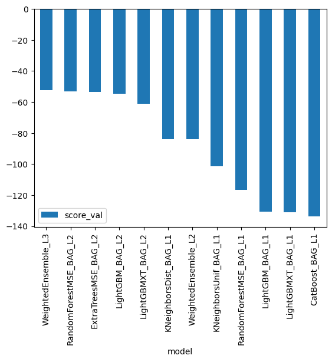
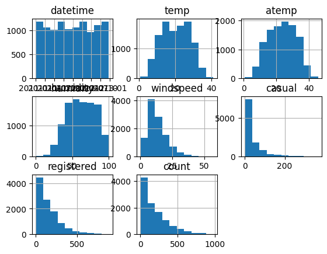
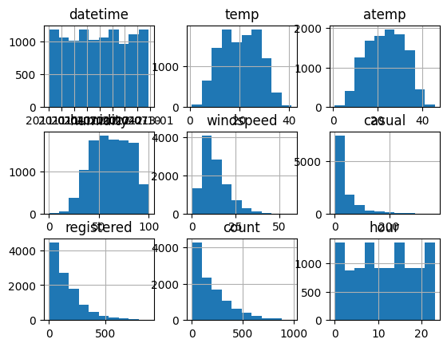
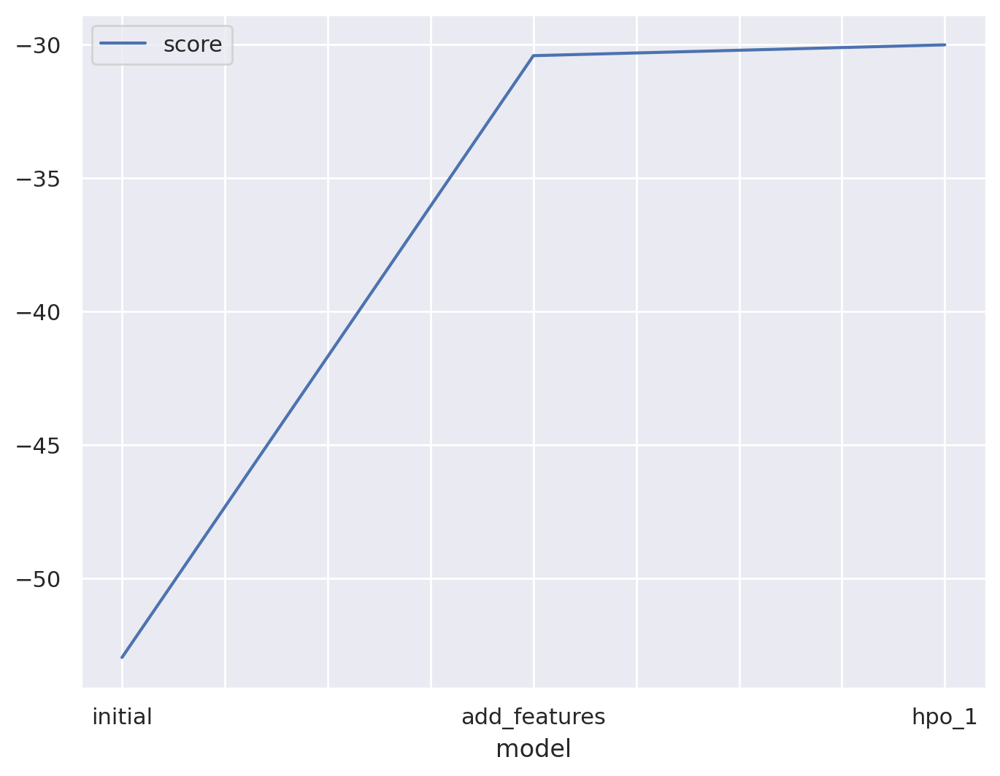
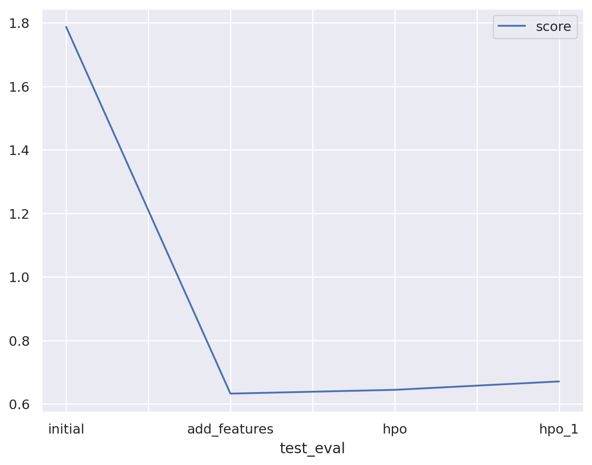
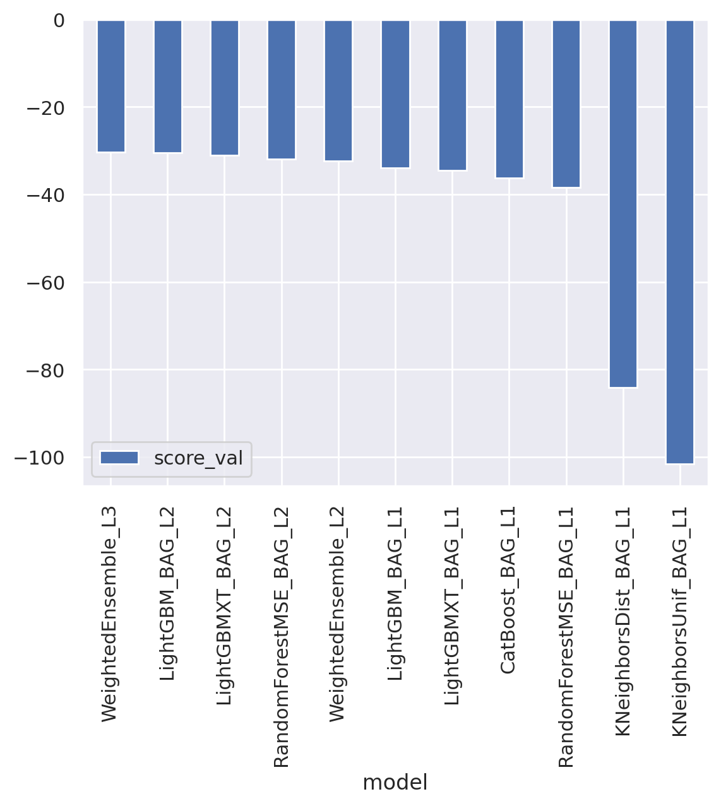
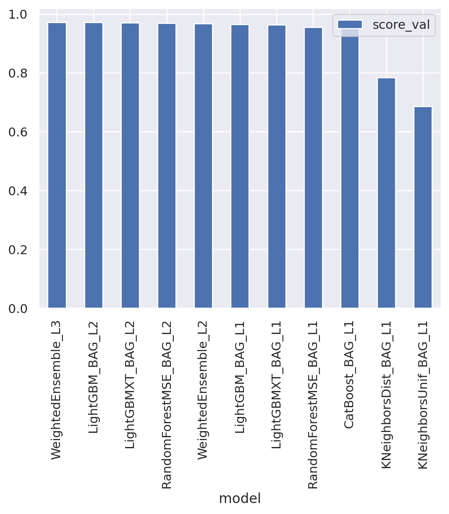
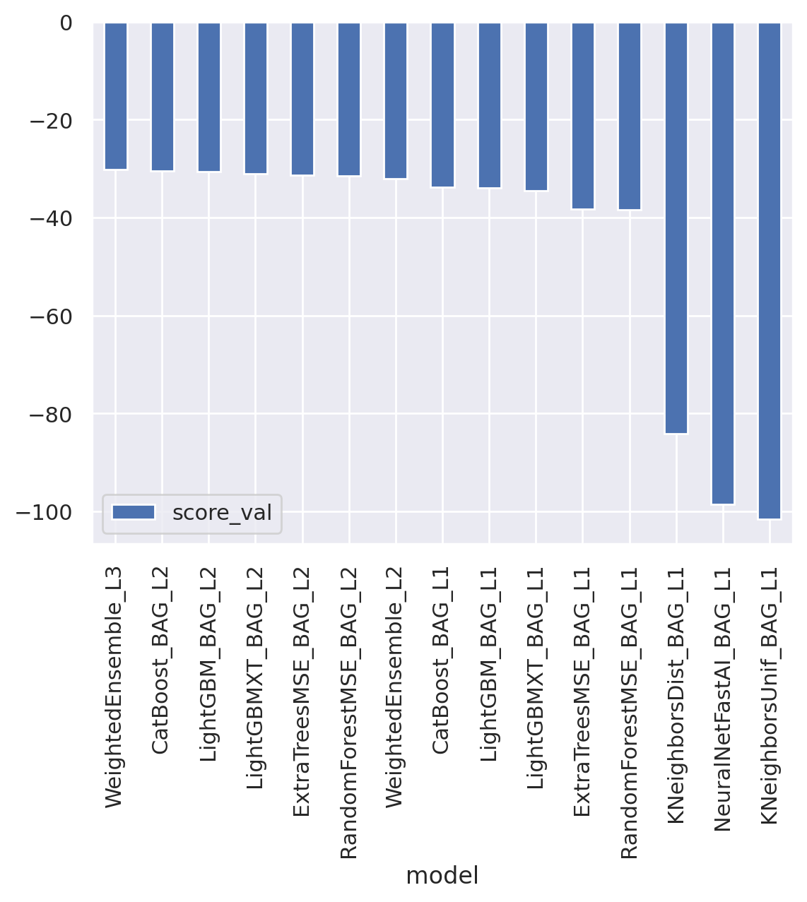
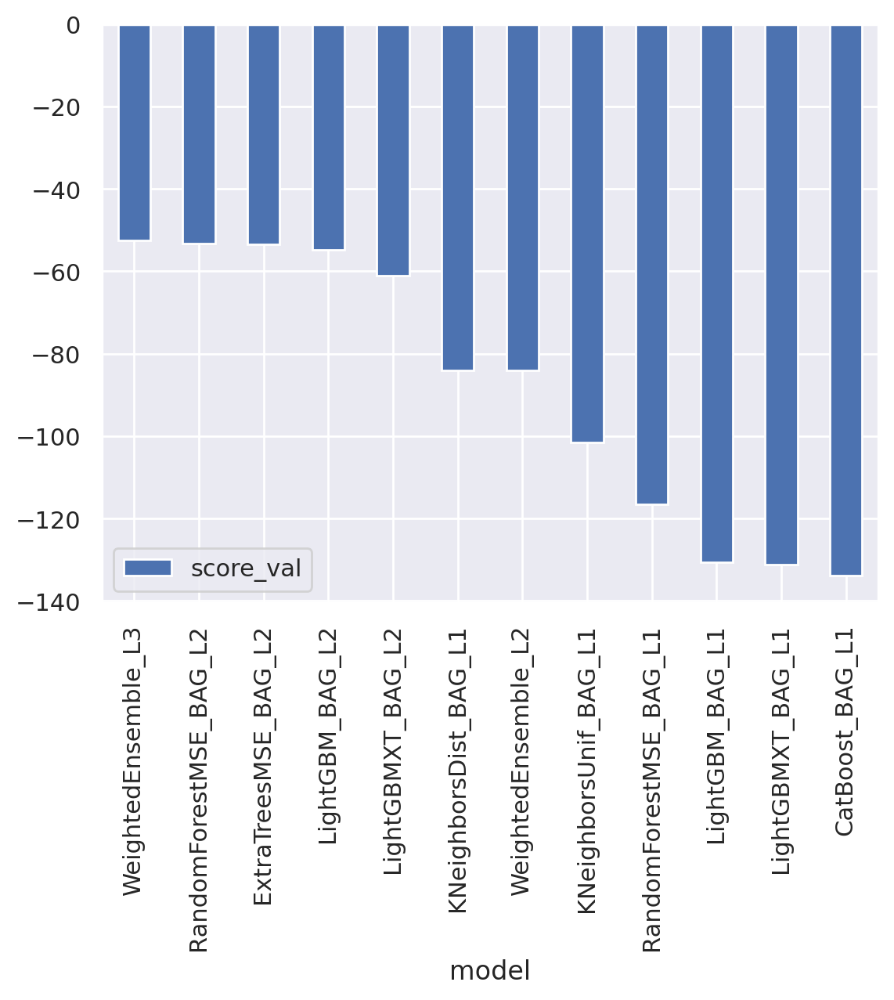

# create the .kaggle directory and an empty kaggle.json file
!mkdir -p /root/.kaggle
!touch /root/.kaggle/kaggle.json
!chmod 600 /root/.kaggle/kaggle.jsonPredict Bike Sharing Demand with AutoGluon Template
Notes:
I ran the notebook in Google Colab but forgot to download the images and have to rerun again. Because of that, the actual value of submissions displayed in the outputs varied from the first time. The images also died.
# Fill in your user name and key from creating the kaggle account and API token file
import json
kaggle_username = ""
kaggle_key = ""
# Save API token the kaggle.json file
with open("/root/.kaggle/kaggle.json", "w") as f:
f.write(json.dumps({"username": kaggle_username, "key": kaggle_key}))!kaggle competitions submissions -c bike-sharing-demandfileName date description status publicScore privateScore
--------------------------- ------------------- -------------------------------------- -------- ----------- ------------
submission_new_hpo_1.csv 2023-05-26 08:41:56 new features with increased time limit complete 0.67834 0.67834
submission_new_hpo.csv 2023-05-26 08:19:14 new features with hyperparameters complete 0.61537 0.61537
submission_new_features.csv 2023-05-26 08:06:23 new features complete 0.63415 0.63415
submission.csv 2023-05-26 07:53:31 first raw submission complete 1.81590 1.81590
submission.csv 2023-05-26 06:48:23 gradient boosting with GridSearchCV complete 0.38863 0.38863
submission_new_hpo_1.csv 2023-05-26 06:27:38 new features with increased time limit complete 0.67070 0.67070
submission_new_hpo.csv 2023-05-26 06:02:10 new features with hyperparameters complete 0.64431 0.64431
submission_new_features.csv 2023-05-26 05:35:50 new features complete 0.63239 0.63239
submission.csv 2023-05-26 05:09:08 first raw submission complete 1.78725 1.78725 Project: Predict Bike Sharing Demand with AutoGluon
This notebook is a template with each step that you need to complete for the project.
Please fill in your code where there are explicit ? markers in the notebook. You are welcome to add more cells and code as you see fit.
Once you have completed all the code implementations, please export your notebook as a HTML file so the reviews can view your code. Make sure you have all outputs correctly outputted.
File-> Export Notebook As... -> Export Notebook as HTML
There is a writeup to complete as well after all code implememtation is done. Please answer all questions and attach the necessary tables and charts. You can complete the writeup in either markdown or PDF.
Completing the code template and writeup template will cover all of the rubric points for this project.
The rubric contains “Stand Out Suggestions” for enhancing the project beyond the minimum requirements. The stand out suggestions are optional. If you decide to pursue the “stand out suggestions”, you can include the code in this notebook and also discuss the results in the writeup file.
Step 1: Create an account with Kaggle
Create Kaggle Account and download API key
Below is example of steps to get the API username and key. Each student will have their own username and key.
- Open account settings.


- Scroll down to API and click Create New API Token.


- Open up
kaggle.jsonand use the username and key.
Step 2: Download the Kaggle dataset using the kaggle python library
Open up Sagemaker Studio and use starter template
- Notebook should be using a
ml.t3.mediuminstance (2 vCPU + 4 GiB) - Notebook should be using kernal:
Python 3 (MXNet 1.8 Python 3.7 CPU Optimized)
Install packages
%%capture
!pip install -U pip
!pip install -U setuptools wheel
!pip install -U "mxnet<2.0.0" bokeh==2.0.1
!pip install autogluon --no-cache-dir
# Without --no-cache-dir, smaller aws instances may have trouble installingSetup Kaggle API Key
Download and explore dataset
Go to the bike sharing demand competition and agree to the terms

# Download the dataset, it will be in a .zip file so you'll need to unzip it as well.
!kaggle competitions download -c bike-sharing-demand
# If you already downloaded it you can use the -o command to overwrite the file
!unzip -o bike-sharing-demand.zipbike-sharing-demand.zip: Skipping, found more recently modified local copy (use --force to force download)
Archive: bike-sharing-demand.zip
inflating: sampleSubmission.csv
inflating: test.csv
inflating: train.csv import pandas as pd
from autogluon.tabular import TabularPredictor# Create the train dataset in pandas by reading the csv
# Set the parsing of the datetime column so you can use some of the `dt` features in pandas later
train = pd.read_csv('train.csv')
train.head()| datetime | season | holiday | workingday | weather | temp | atemp | humidity | windspeed | casual | registered | count | |
|---|---|---|---|---|---|---|---|---|---|---|---|---|
| 0 | 2011-01-01 00:00:00 | 1 | 0 | 0 | 1 | 9.84 | 14.395 | 81 | 0.0 | 3 | 13 | 16 |
| 1 | 2011-01-01 01:00:00 | 1 | 0 | 0 | 1 | 9.02 | 13.635 | 80 | 0.0 | 8 | 32 | 40 |
| 2 | 2011-01-01 02:00:00 | 1 | 0 | 0 | 1 | 9.02 | 13.635 | 80 | 0.0 | 5 | 27 | 32 |
| 3 | 2011-01-01 03:00:00 | 1 | 0 | 0 | 1 | 9.84 | 14.395 | 75 | 0.0 | 3 | 10 | 13 |
| 4 | 2011-01-01 04:00:00 | 1 | 0 | 0 | 1 | 9.84 | 14.395 | 75 | 0.0 | 0 | 1 | 1 |
train.loc[:,'datetime'] = pd.to_datetime(train.loc[:,'datetime'])
train.loc[:,'season':'weather'] = train.loc[:,'season':'weather'].astype('category')
train.info()<class 'pandas.core.frame.DataFrame'>
RangeIndex: 10886 entries, 0 to 10885
Data columns (total 12 columns):
# Column Non-Null Count Dtype
--- ------ -------------- -----
0 datetime 10886 non-null datetime64[ns]
1 season 10886 non-null category
2 holiday 10886 non-null category
3 workingday 10886 non-null category
4 weather 10886 non-null category
5 temp 10886 non-null float64
6 atemp 10886 non-null float64
7 humidity 10886 non-null int64
8 windspeed 10886 non-null float64
9 casual 10886 non-null int64
10 registered 10886 non-null int64
11 count 10886 non-null int64
dtypes: category(4), datetime64[ns](1), float64(3), int64(4)
memory usage: 723.7 KBDeprecationWarning: In a future version, `df.iloc[:, i] = newvals` will attempt to set the values inplace instead of always setting a new array. To retain the old behavior, use either `df[df.columns[i]] = newvals` or, if columns are non-unique, `df.isetitem(i, newvals)`
train.loc[:,'datetime'] = pd.to_datetime(train.loc[:,'datetime'])# Simple output of the train dataset to view some of the min/max/varition of the dataset features.
train.describe()| temp | atemp | humidity | windspeed | casual | registered | count | |
|---|---|---|---|---|---|---|---|
| count | 10886.00000 | 10886.000000 | 10886.000000 | 10886.000000 | 10886.000000 | 10886.000000 | 10886.000000 |
| mean | 20.23086 | 23.655084 | 61.886460 | 12.799395 | 36.021955 | 155.552177 | 191.574132 |
| std | 7.79159 | 8.474601 | 19.245033 | 8.164537 | 49.960477 | 151.039033 | 181.144454 |
| min | 0.82000 | 0.760000 | 0.000000 | 0.000000 | 0.000000 | 0.000000 | 1.000000 |
| 25% | 13.94000 | 16.665000 | 47.000000 | 7.001500 | 4.000000 | 36.000000 | 42.000000 |
| 50% | 20.50000 | 24.240000 | 62.000000 | 12.998000 | 17.000000 | 118.000000 | 145.000000 |
| 75% | 26.24000 | 31.060000 | 77.000000 | 16.997900 | 49.000000 | 222.000000 | 284.000000 |
| max | 41.00000 | 45.455000 | 100.000000 | 56.996900 | 367.000000 | 886.000000 | 977.000000 |
# Create the test pandas dataframe in pandas by reading the csv, remember to parse the datetime!
test = pd.read_csv('test.csv')
test.loc[:,'datetime'] = pd.to_datetime(test.loc[:,'datetime'])
test.loc[:,'season':'weather'] = test.loc[:,'season':'weather'].astype('category')
test.head()DeprecationWarning: In a future version, `df.iloc[:, i] = newvals` will attempt to set the values inplace instead of always setting a new array. To retain the old behavior, use either `df[df.columns[i]] = newvals` or, if columns are non-unique, `df.isetitem(i, newvals)`
test.loc[:,'datetime'] = pd.to_datetime(test.loc[:,'datetime'])| datetime | season | holiday | workingday | weather | temp | atemp | humidity | windspeed | |
|---|---|---|---|---|---|---|---|---|---|
| 0 | 2011-01-20 00:00:00 | 1 | 0 | 1 | 1 | 10.66 | 11.365 | 56 | 26.0027 |
| 1 | 2011-01-20 01:00:00 | 1 | 0 | 1 | 1 | 10.66 | 13.635 | 56 | 0.0000 |
| 2 | 2011-01-20 02:00:00 | 1 | 0 | 1 | 1 | 10.66 | 13.635 | 56 | 0.0000 |
| 3 | 2011-01-20 03:00:00 | 1 | 0 | 1 | 1 | 10.66 | 12.880 | 56 | 11.0014 |
| 4 | 2011-01-20 04:00:00 | 1 | 0 | 1 | 1 | 10.66 | 12.880 | 56 | 11.0014 |
test.info()<class 'pandas.core.frame.DataFrame'>
RangeIndex: 6493 entries, 0 to 6492
Data columns (total 9 columns):
# Column Non-Null Count Dtype
--- ------ -------------- -----
0 datetime 6493 non-null datetime64[ns]
1 season 6493 non-null category
2 holiday 6493 non-null category
3 workingday 6493 non-null category
4 weather 6493 non-null category
5 temp 6493 non-null float64
6 atemp 6493 non-null float64
7 humidity 6493 non-null int64
8 windspeed 6493 non-null float64
dtypes: category(4), datetime64[ns](1), float64(3), int64(1)
memory usage: 279.8 KB# Same thing as train and test dataset
submission = pd.read_csv('sampleSubmission.csv', parse_dates=['datetime'])
submission.head()| datetime | count | |
|---|---|---|
| 0 | 2011-01-20 00:00:00 | 0 |
| 1 | 2011-01-20 01:00:00 | 0 |
| 2 | 2011-01-20 02:00:00 | 0 |
| 3 | 2011-01-20 03:00:00 | 0 |
| 4 | 2011-01-20 04:00:00 | 0 |
submission.info()<class 'pandas.core.frame.DataFrame'>
RangeIndex: 6493 entries, 0 to 6492
Data columns (total 2 columns):
# Column Non-Null Count Dtype
--- ------ -------------- -----
0 datetime 6493 non-null datetime64[ns]
1 count 6493 non-null int64
dtypes: datetime64[ns](1), int64(1)
memory usage: 101.6 KBStep 3: Train a model using AutoGluon’s Tabular Prediction
Requirements: * We are prediting count, so it is the label we are setting. * Ignore casual and registered columns as they are also not present in the test dataset. * Use the root_mean_squared_error as the metric to use for evaluation. * Set a time limit of 10 minutes (600 seconds). * Use the preset best_quality to focus on creating the best model.
predictor = TabularPredictor(label='count',
problem_type='regression',
learner_kwargs = {'ignored_columns': ['casual', 'registered']}
).fit(train_data=train, time_limit=600, presets="best_quality")No path specified. Models will be saved in: "AutogluonModels/ag-20230526_074151/"
Presets specified: ['best_quality']
Stack configuration (auto_stack=True): num_stack_levels=1, num_bag_folds=8, num_bag_sets=20
Beginning AutoGluon training ... Time limit = 600s
AutoGluon will save models to "AutogluonModels/ag-20230526_074151/"
AutoGluon Version: 0.7.0
Python Version: 3.10.11
Operating System: Linux
Platform Machine: x86_64
Platform Version: #1 SMP Sat Apr 29 09:15:28 UTC 2023
Train Data Rows: 10886
Train Data Columns: 11
Label Column: count
Preprocessing data ...
Using Feature Generators to preprocess the data ...
Dropping user-specified ignored columns: ['casual', 'registered']
Fitting AutoMLPipelineFeatureGenerator...
Available Memory: 11701.54 MB
Train Data (Original) Memory Usage: 0.48 MB (0.0% of available memory)
Inferring data type of each feature based on column values. Set feature_metadata_in to manually specify special dtypes of the features.
Stage 1 Generators:
Fitting AsTypeFeatureGenerator...
Note: Converting 2 features to boolean dtype as they only contain 2 unique values.
Stage 2 Generators:
Fitting FillNaFeatureGenerator...
Stage 3 Generators:
Fitting IdentityFeatureGenerator...
Fitting CategoryFeatureGenerator...
Fitting CategoryMemoryMinimizeFeatureGenerator...
Fitting DatetimeFeatureGenerator...
Stage 4 Generators:
Fitting DropUniqueFeatureGenerator...
Types of features in original data (raw dtype, special dtypes):
('category', []) : 4 | ['season', 'holiday', 'workingday', 'weather']
('datetime', []) : 1 | ['datetime']
('float', []) : 3 | ['temp', 'atemp', 'windspeed']
('int', []) : 1 | ['humidity']
Types of features in processed data (raw dtype, special dtypes):
('category', []) : 2 | ['season', 'weather']
('float', []) : 3 | ['temp', 'atemp', 'windspeed']
('int', []) : 1 | ['humidity']
('int', ['bool']) : 2 | ['holiday', 'workingday']
('int', ['datetime_as_int']) : 5 | ['datetime', 'datetime.year', 'datetime.month', 'datetime.day', 'datetime.dayofweek']
0.2s = Fit runtime
9 features in original data used to generate 13 features in processed data.
Train Data (Processed) Memory Usage: 0.83 MB (0.0% of available memory)
Data preprocessing and feature engineering runtime = 0.21s ...
AutoGluon will gauge predictive performance using evaluation metric: 'root_mean_squared_error'
This metric's sign has been flipped to adhere to being higher_is_better. The metric score can be multiplied by -1 to get the metric value.
To change this, specify the eval_metric parameter of Predictor()
AutoGluon will fit 2 stack levels (L1 to L2) ...
Fitting 11 L1 models ...
Fitting model: KNeighborsUnif_BAG_L1 ... Training model for up to 399.76s of the 599.78s of remaining time.
-101.5462 = Validation score (-root_mean_squared_error)
0.04s = Training runtime
0.04s = Validation runtime
Fitting model: KNeighborsDist_BAG_L1 ... Training model for up to 399.62s of the 599.65s of remaining time.
-84.1251 = Validation score (-root_mean_squared_error)
0.04s = Training runtime
0.04s = Validation runtime
Fitting model: LightGBMXT_BAG_L1 ... Training model for up to 399.5s of the 599.53s of remaining time.
Fitting 8 child models (S1F1 - S1F8) | Fitting with ParallelLocalFoldFittingStrategy
-131.1592 = Validation score (-root_mean_squared_error)
186.89s = Training runtime
21.42s = Validation runtime
Fitting model: LightGBM_BAG_L1 ... Training model for up to 201.37s of the 401.4s of remaining time.
Fitting 8 child models (S1F1 - S1F8) | Fitting with ParallelLocalFoldFittingStrategy
-130.675 = Validation score (-root_mean_squared_error)
53.29s = Training runtime
5.5s = Validation runtime
Fitting model: RandomForestMSE_BAG_L1 ... Training model for up to 142.37s of the 342.4s of remaining time.
-116.6254 = Validation score (-root_mean_squared_error)
20.29s = Training runtime
0.64s = Validation runtime
Fitting model: CatBoost_BAG_L1 ... Training model for up to 120.19s of the 320.21s of remaining time.
Fitting 8 child models (S1F1 - S1F8) | Fitting with ParallelLocalFoldFittingStrategy
-133.7724 = Validation score (-root_mean_squared_error)
120.41s = Training runtime
0.25s = Validation runtime
Completed 1/20 k-fold bagging repeats ...
Fitting model: WeightedEnsemble_L2 ... Training model for up to 360.0s of the 190.92s of remaining time.
-84.1251 = Validation score (-root_mean_squared_error)
0.63s = Training runtime
0.0s = Validation runtime
Fitting 9 L2 models ...
Fitting model: LightGBMXT_BAG_L2 ... Training model for up to 190.26s of the 190.24s of remaining time.
Fitting 8 child models (S1F1 - S1F8) | Fitting with ParallelLocalFoldFittingStrategy
-61.0722 = Validation score (-root_mean_squared_error)
82.9s = Training runtime
10.67s = Validation runtime
Fitting model: LightGBM_BAG_L2 ... Training model for up to 97.33s of the 97.31s of remaining time.
Fitting 8 child models (S1F1 - S1F8) | Fitting with ParallelLocalFoldFittingStrategy
-54.7932 = Validation score (-root_mean_squared_error)
36.39s = Training runtime
0.42s = Validation runtime
Fitting model: RandomForestMSE_BAG_L2 ... Training model for up to 52.36s of the 52.34s of remaining time.
-53.291 = Validation score (-root_mean_squared_error)
43.27s = Training runtime
0.84s = Validation runtime
Fitting model: CatBoost_BAG_L2 ... Training model for up to 7.1s of the 7.08s of remaining time.
Fitting 8 child models (S1F1 - S1F8) | Fitting with ParallelLocalFoldFittingStrategy
Time limit exceeded... Skipping CatBoost_BAG_L2.
Fitting model: ExtraTreesMSE_BAG_L2 ... Training model for up to 0.48s of the 0.44s of remaining time.
2023-05-26 07:51:52,261 ERROR worker.py:400 -- Unhandled error (suppress with 'RAY_IGNORE_UNHANDLED_ERRORS=1'): The worker died unexpectedly while executing this task. Check python-core-worker-*.log files for more information.
-53.3828 = Validation score (-root_mean_squared_error)
17.18s = Training runtime
0.85s = Validation runtime
Completed 1/20 k-fold bagging repeats ...
Fitting model: WeightedEnsemble_L3 ... Training model for up to 360.0s of the -18.89s of remaining time.
-52.5761 = Validation score (-root_mean_squared_error)
0.28s = Training runtime
0.0s = Validation runtime
AutoGluon training complete, total runtime = 619.21s ... Best model: "WeightedEnsemble_L3"
TabularPredictor saved. To load, use: predictor = TabularPredictor.load("AutogluonModels/ag-20230526_074151/")Review AutoGluon’s training run with ranking of models that did the best.
predictor.fit_summary()*** Summary of fit() ***
Estimated performance of each model:
model score_val pred_time_val fit_time pred_time_val_marginal fit_time_marginal stack_level can_infer fit_order
0 WeightedEnsemble_L3 -52.576096 30.010471 478.078084 0.001048 0.278779 3 True 12
1 RandomForestMSE_BAG_L2 -53.291017 28.741719 424.229200 0.838891 43.271575 2 True 10
2 ExtraTreesMSE_BAG_L2 -53.382756 28.750743 398.135309 0.847916 17.177684 2 True 11
3 LightGBM_BAG_L2 -54.793168 28.322617 417.350047 0.419789 36.392422 2 True 9
4 LightGBMXT_BAG_L2 -61.072182 38.575348 463.859215 10.672520 82.901590 2 True 8
5 KNeighborsDist_BAG_L1 -84.125061 0.043805 0.036887 0.043805 0.036887 1 True 2
6 WeightedEnsemble_L2 -84.125061 0.045573 0.667892 0.001768 0.631005 2 True 7
7 KNeighborsUnif_BAG_L1 -101.546199 0.044465 0.036242 0.044465 0.036242 1 True 1
8 RandomForestMSE_BAG_L1 -116.625366 0.641476 20.286717 0.641476 20.286717 1 True 5
9 LightGBM_BAG_L1 -130.675014 5.499672 53.291182 5.499672 53.291182 1 True 4
10 LightGBMXT_BAG_L1 -131.159249 21.421916 186.893169 21.421916 186.893169 1 True 3
11 CatBoost_BAG_L1 -133.772438 0.251494 120.413429 0.251494 120.413429 1 True 6
Number of models trained: 12
Types of models trained:
{'WeightedEnsembleModel', 'StackerEnsembleModel_XT', 'StackerEnsembleModel_KNN', 'StackerEnsembleModel_LGB', 'StackerEnsembleModel_CatBoost', 'StackerEnsembleModel_RF'}
Bagging used: True (with 8 folds)
Multi-layer stack-ensembling used: True (with 3 levels)
Feature Metadata (Processed):
(raw dtype, special dtypes):
('category', []) : 2 | ['season', 'weather']
('float', []) : 3 | ['temp', 'atemp', 'windspeed']
('int', []) : 1 | ['humidity']
('int', ['bool']) : 2 | ['holiday', 'workingday']
('int', ['datetime_as_int']) : 5 | ['datetime', 'datetime.year', 'datetime.month', 'datetime.day', 'datetime.dayofweek']
*** End of fit() summary ***/usr/local/lib/python3.10/dist-packages/autogluon/core/utils/plots.py:138: UserWarning: AutoGluon summary plots cannot be created because bokeh is not installed. To see plots, please do: "pip install bokeh==2.0.1"
warnings.warn('AutoGluon summary plots cannot be created because bokeh is not installed. To see plots, please do: "pip install bokeh==2.0.1"'){'model_types': {'KNeighborsUnif_BAG_L1': 'StackerEnsembleModel_KNN',
'KNeighborsDist_BAG_L1': 'StackerEnsembleModel_KNN',
'LightGBMXT_BAG_L1': 'StackerEnsembleModel_LGB',
'LightGBM_BAG_L1': 'StackerEnsembleModel_LGB',
'RandomForestMSE_BAG_L1': 'StackerEnsembleModel_RF',
'CatBoost_BAG_L1': 'StackerEnsembleModel_CatBoost',
'WeightedEnsemble_L2': 'WeightedEnsembleModel',
'LightGBMXT_BAG_L2': 'StackerEnsembleModel_LGB',
'LightGBM_BAG_L2': 'StackerEnsembleModel_LGB',
'RandomForestMSE_BAG_L2': 'StackerEnsembleModel_RF',
'ExtraTreesMSE_BAG_L2': 'StackerEnsembleModel_XT',
'WeightedEnsemble_L3': 'WeightedEnsembleModel'},
'model_performance': {'KNeighborsUnif_BAG_L1': -101.54619908446061,
'KNeighborsDist_BAG_L1': -84.12506123181602,
'LightGBMXT_BAG_L1': -131.15924850163722,
'LightGBM_BAG_L1': -130.67501424016515,
'RandomForestMSE_BAG_L1': -116.62536550916602,
'CatBoost_BAG_L1': -133.7724377937292,
'WeightedEnsemble_L2': -84.12506123181602,
'LightGBMXT_BAG_L2': -61.07218211582261,
'LightGBM_BAG_L2': -54.79316841050465,
'RandomForestMSE_BAG_L2': -53.29101655654109,
'ExtraTreesMSE_BAG_L2': -53.3827555122278,
'WeightedEnsemble_L3': -52.57609605856379},
'model_best': 'WeightedEnsemble_L3',
'model_paths': {'KNeighborsUnif_BAG_L1': 'AutogluonModels/ag-20230526_074151/models/KNeighborsUnif_BAG_L1/',
'KNeighborsDist_BAG_L1': 'AutogluonModels/ag-20230526_074151/models/KNeighborsDist_BAG_L1/',
'LightGBMXT_BAG_L1': 'AutogluonModels/ag-20230526_074151/models/LightGBMXT_BAG_L1/',
'LightGBM_BAG_L1': 'AutogluonModels/ag-20230526_074151/models/LightGBM_BAG_L1/',
'RandomForestMSE_BAG_L1': 'AutogluonModels/ag-20230526_074151/models/RandomForestMSE_BAG_L1/',
'CatBoost_BAG_L1': 'AutogluonModels/ag-20230526_074151/models/CatBoost_BAG_L1/',
'WeightedEnsemble_L2': 'AutogluonModels/ag-20230526_074151/models/WeightedEnsemble_L2/',
'LightGBMXT_BAG_L2': 'AutogluonModels/ag-20230526_074151/models/LightGBMXT_BAG_L2/',
'LightGBM_BAG_L2': 'AutogluonModels/ag-20230526_074151/models/LightGBM_BAG_L2/',
'RandomForestMSE_BAG_L2': 'AutogluonModels/ag-20230526_074151/models/RandomForestMSE_BAG_L2/',
'ExtraTreesMSE_BAG_L2': 'AutogluonModels/ag-20230526_074151/models/ExtraTreesMSE_BAG_L2/',
'WeightedEnsemble_L3': 'AutogluonModels/ag-20230526_074151/models/WeightedEnsemble_L3/'},
'model_fit_times': {'KNeighborsUnif_BAG_L1': 0.036241769790649414,
'KNeighborsDist_BAG_L1': 0.03688669204711914,
'LightGBMXT_BAG_L1': 186.8931691646576,
'LightGBM_BAG_L1': 53.291181564331055,
'RandomForestMSE_BAG_L1': 20.286717176437378,
'CatBoost_BAG_L1': 120.41342854499817,
'WeightedEnsemble_L2': 0.6310052871704102,
'LightGBMXT_BAG_L2': 82.9015896320343,
'LightGBM_BAG_L2': 36.39242172241211,
'RandomForestMSE_BAG_L2': 43.27157473564148,
'ExtraTreesMSE_BAG_L2': 17.17768359184265,
'WeightedEnsemble_L3': 0.2787787914276123},
'model_pred_times': {'KNeighborsUnif_BAG_L1': 0.044465065002441406,
'KNeighborsDist_BAG_L1': 0.04380488395690918,
'LightGBMXT_BAG_L1': 21.421916007995605,
'LightGBM_BAG_L1': 5.499671697616577,
'RandomForestMSE_BAG_L1': 0.6414763927459717,
'CatBoost_BAG_L1': 0.2514936923980713,
'WeightedEnsemble_L2': 0.001767873764038086,
'LightGBMXT_BAG_L2': 10.67251992225647,
'LightGBM_BAG_L2': 0.41978883743286133,
'RandomForestMSE_BAG_L2': 0.8388912677764893,
'ExtraTreesMSE_BAG_L2': 0.8479156494140625,
'WeightedEnsemble_L3': 0.0010476112365722656},
'num_bag_folds': 8,
'max_stack_level': 3,
'model_hyperparams': {'KNeighborsUnif_BAG_L1': {'use_orig_features': True,
'max_base_models': 25,
'max_base_models_per_type': 5,
'save_bag_folds': True,
'use_child_oof': True},
'KNeighborsDist_BAG_L1': {'use_orig_features': True,
'max_base_models': 25,
'max_base_models_per_type': 5,
'save_bag_folds': True,
'use_child_oof': True},
'LightGBMXT_BAG_L1': {'use_orig_features': True,
'max_base_models': 25,
'max_base_models_per_type': 5,
'save_bag_folds': True},
'LightGBM_BAG_L1': {'use_orig_features': True,
'max_base_models': 25,
'max_base_models_per_type': 5,
'save_bag_folds': True},
'RandomForestMSE_BAG_L1': {'use_orig_features': True,
'max_base_models': 25,
'max_base_models_per_type': 5,
'save_bag_folds': True,
'use_child_oof': True},
'CatBoost_BAG_L1': {'use_orig_features': True,
'max_base_models': 25,
'max_base_models_per_type': 5,
'save_bag_folds': True},
'WeightedEnsemble_L2': {'use_orig_features': False,
'max_base_models': 25,
'max_base_models_per_type': 5,
'save_bag_folds': True},
'LightGBMXT_BAG_L2': {'use_orig_features': True,
'max_base_models': 25,
'max_base_models_per_type': 5,
'save_bag_folds': True},
'LightGBM_BAG_L2': {'use_orig_features': True,
'max_base_models': 25,
'max_base_models_per_type': 5,
'save_bag_folds': True},
'RandomForestMSE_BAG_L2': {'use_orig_features': True,
'max_base_models': 25,
'max_base_models_per_type': 5,
'save_bag_folds': True,
'use_child_oof': True},
'ExtraTreesMSE_BAG_L2': {'use_orig_features': True,
'max_base_models': 25,
'max_base_models_per_type': 5,
'save_bag_folds': True,
'use_child_oof': True},
'WeightedEnsemble_L3': {'use_orig_features': False,
'max_base_models': 25,
'max_base_models_per_type': 5,
'save_bag_folds': True}},
'leaderboard': model score_val pred_time_val fit_time \
0 WeightedEnsemble_L3 -52.576096 30.010471 478.078084
1 RandomForestMSE_BAG_L2 -53.291017 28.741719 424.229200
2 ExtraTreesMSE_BAG_L2 -53.382756 28.750743 398.135309
3 LightGBM_BAG_L2 -54.793168 28.322617 417.350047
4 LightGBMXT_BAG_L2 -61.072182 38.575348 463.859215
5 KNeighborsDist_BAG_L1 -84.125061 0.043805 0.036887
6 WeightedEnsemble_L2 -84.125061 0.045573 0.667892
7 KNeighborsUnif_BAG_L1 -101.546199 0.044465 0.036242
8 RandomForestMSE_BAG_L1 -116.625366 0.641476 20.286717
9 LightGBM_BAG_L1 -130.675014 5.499672 53.291182
10 LightGBMXT_BAG_L1 -131.159249 21.421916 186.893169
11 CatBoost_BAG_L1 -133.772438 0.251494 120.413429
pred_time_val_marginal fit_time_marginal stack_level can_infer \
0 0.001048 0.278779 3 True
1 0.838891 43.271575 2 True
2 0.847916 17.177684 2 True
3 0.419789 36.392422 2 True
4 10.672520 82.901590 2 True
5 0.043805 0.036887 1 True
6 0.001768 0.631005 2 True
7 0.044465 0.036242 1 True
8 0.641476 20.286717 1 True
9 5.499672 53.291182 1 True
10 21.421916 186.893169 1 True
11 0.251494 120.413429 1 True
fit_order
0 12
1 10
2 11
3 9
4 8
5 2
6 7
7 1
8 5
9 4
10 3
11 6 }predictor.leaderboard(silent=True).plot(kind="bar", x="model", y="score_val")<Axes: xlabel='model'>
Create predictions from test dataset
predictions = predictor.predict(test)
predictions.head()0 23.171047
1 41.330738
2 45.296040
3 48.605858
4 51.984993
Name: count, dtype: float32NOTE: Kaggle will reject the submission if we don’t set everything to be > 0.
# Describe the `predictions` series to see if there are any negative values
predictions.describe()count 6493.000000
mean 100.268829
std 90.229675
min 3.072221
25% 19.915821
50% 62.896004
75% 170.020111
max 363.827271
Name: count, dtype: float64# How many negative values do we have?
predictions.lt(0).sum()0# Set them to zero
predictions[predictions.lt(0)] = 0
predictions.head()0 23.171047
1 41.330738
2 45.296040
3 48.605858
4 51.984993
Name: count, dtype: float32predictions.lt(0).sum()0Set predictions to submission dataframe, save, and submit
submission["count"] = predictions
submission.to_csv("submission.csv", index=False)!kaggle competitions submit -c bike-sharing-demand -f submission.csv -m "first raw submission"100% 188k/188k [00:02<00:00, 78.9kB/s]
Successfully submitted to Bike Sharing DemandView submission via the command line or in the web browser under the competition’s page - My Submissions
!kaggle competitions submissions -c bike-sharing-demand | tail -n +1 | head -n 6fileName date description status publicScore privateScore
--------------------------- ------------------- -------------------------------------- -------- ----------- ------------
submission.csv 2023-05-26 07:53:31 first raw submission complete 1.81590 1.81590
submission.csv 2023-05-26 06:48:23 gradient boosting with GridSearchCV complete 0.38863 0.38863
submission_new_hpo_1.csv 2023-05-26 06:27:38 new features with increased time limit complete 0.67070 0.67070
submission_new_hpo.csv 2023-05-26 06:02:10 new features with hyperparameters complete 0.64431 0.64431 Initial score of \(1.78725\)
Step 4: Exploratory Data Analysis and Creating an additional feature
- Any additional feature will do, but a great suggestion would be to separate out the datetime into hour, day, or month parts.
# Create a histogram of all features to show the distribution of each one relative to the data. This is part of the exploritory data analysis
train.hist();
# create a new feature
train['hour'] = train.datetime.dt.hour
test['hour'] = test.datetime.dt.hourMake category types for these so models know they are not just numbers
- AutoGluon originally sees these as ints, but in reality they are int representations of a category.
- Setting the dtype to category will classify these as categories in AutoGluon.
# Accidentally done above
# train["season"] = ?
# train["weather"] = ?
# test["season"] = ?
# test["weather"] = ?train.info()<class 'pandas.core.frame.DataFrame'>
RangeIndex: 10886 entries, 0 to 10885
Data columns (total 13 columns):
# Column Non-Null Count Dtype
--- ------ -------------- -----
0 datetime 10886 non-null datetime64[ns]
1 season 10886 non-null category
2 holiday 10886 non-null category
3 workingday 10886 non-null category
4 weather 10886 non-null category
5 temp 10886 non-null float64
6 atemp 10886 non-null float64
7 humidity 10886 non-null int64
8 windspeed 10886 non-null float64
9 casual 10886 non-null int64
10 registered 10886 non-null int64
11 count 10886 non-null int64
12 hour 10886 non-null int64
dtypes: category(4), datetime64[ns](1), float64(3), int64(5)
memory usage: 808.7 KB# View are new feature
train.head()| datetime | season | holiday | workingday | weather | temp | atemp | humidity | windspeed | casual | registered | count | hour | |
|---|---|---|---|---|---|---|---|---|---|---|---|---|---|
| 0 | 2011-01-01 00:00:00 | 1 | 0 | 0 | 1 | 9.84 | 14.395 | 81 | 0.0 | 3 | 13 | 16 | 0 |
| 1 | 2011-01-01 01:00:00 | 1 | 0 | 0 | 1 | 9.02 | 13.635 | 80 | 0.0 | 8 | 32 | 40 | 1 |
| 2 | 2011-01-01 02:00:00 | 1 | 0 | 0 | 1 | 9.02 | 13.635 | 80 | 0.0 | 5 | 27 | 32 | 2 |
| 3 | 2011-01-01 03:00:00 | 1 | 0 | 0 | 1 | 9.84 | 14.395 | 75 | 0.0 | 3 | 10 | 13 | 3 |
| 4 | 2011-01-01 04:00:00 | 1 | 0 | 0 | 1 | 9.84 | 14.395 | 75 | 0.0 | 0 | 1 | 1 | 4 |
# View histogram of all features again now with the hour feature
train.hist();
Step 5: Rerun the model with the same settings as before, just with more features
predictor_new_features = TabularPredictor(label='count',
problem_type='regression',
learner_kwargs = {'ignored_columns': ['casual', 'registered']}
).fit(train_data=train, time_limit=600, presets="best_quality")No path specified. Models will be saved in: "AutogluonModels/ag-20230526_075339/"
Presets specified: ['best_quality']
Stack configuration (auto_stack=True): num_stack_levels=1, num_bag_folds=8, num_bag_sets=20
Beginning AutoGluon training ... Time limit = 600s
AutoGluon will save models to "AutogluonModels/ag-20230526_075339/"
AutoGluon Version: 0.7.0
Python Version: 3.10.11
Operating System: Linux
Platform Machine: x86_64
Platform Version: #1 SMP Sat Apr 29 09:15:28 UTC 2023
Train Data Rows: 10886
Train Data Columns: 12
Label Column: count
Preprocessing data ...
Using Feature Generators to preprocess the data ...
Dropping user-specified ignored columns: ['casual', 'registered']
Fitting AutoMLPipelineFeatureGenerator...
Available Memory: 10841.68 MB
Train Data (Original) Memory Usage: 0.57 MB (0.0% of available memory)
Inferring data type of each feature based on column values. Set feature_metadata_in to manually specify special dtypes of the features.
Stage 1 Generators:
Fitting AsTypeFeatureGenerator...
Note: Converting 2 features to boolean dtype as they only contain 2 unique values.
Stage 2 Generators:
Fitting FillNaFeatureGenerator...
Stage 3 Generators:
Fitting IdentityFeatureGenerator...
Fitting CategoryFeatureGenerator...
Fitting CategoryMemoryMinimizeFeatureGenerator...
Fitting DatetimeFeatureGenerator...
Stage 4 Generators:
Fitting DropUniqueFeatureGenerator...
Types of features in original data (raw dtype, special dtypes):
('category', []) : 4 | ['season', 'holiday', 'workingday', 'weather']
('datetime', []) : 1 | ['datetime']
('float', []) : 3 | ['temp', 'atemp', 'windspeed']
('int', []) : 2 | ['humidity', 'hour']
Types of features in processed data (raw dtype, special dtypes):
('category', []) : 2 | ['season', 'weather']
('float', []) : 3 | ['temp', 'atemp', 'windspeed']
('int', []) : 2 | ['humidity', 'hour']
('int', ['bool']) : 2 | ['holiday', 'workingday']
('int', ['datetime_as_int']) : 5 | ['datetime', 'datetime.year', 'datetime.month', 'datetime.day', 'datetime.dayofweek']
0.3s = Fit runtime
10 features in original data used to generate 14 features in processed data.
Train Data (Processed) Memory Usage: 0.92 MB (0.0% of available memory)
Data preprocessing and feature engineering runtime = 0.31s ...
AutoGluon will gauge predictive performance using evaluation metric: 'root_mean_squared_error'
This metric's sign has been flipped to adhere to being higher_is_better. The metric score can be multiplied by -1 to get the metric value.
To change this, specify the eval_metric parameter of Predictor()
AutoGluon will fit 2 stack levels (L1 to L2) ...
Fitting 11 L1 models ...
Fitting model: KNeighborsUnif_BAG_L1 ... Training model for up to 399.69s of the 599.68s of remaining time.
-101.5462 = Validation score (-root_mean_squared_error)
0.09s = Training runtime
0.08s = Validation runtime
Fitting model: KNeighborsDist_BAG_L1 ... Training model for up to 399.45s of the 599.44s of remaining time.
-84.1251 = Validation score (-root_mean_squared_error)
0.06s = Training runtime
0.08s = Validation runtime
Fitting model: LightGBMXT_BAG_L1 ... Training model for up to 399.24s of the 599.23s of remaining time.
Fitting 8 child models (S1F1 - S1F8) | Fitting with ParallelLocalFoldFittingStrategy
-34.4573 = Validation score (-root_mean_squared_error)
165.95s = Training runtime
47.76s = Validation runtime
Fitting model: LightGBM_BAG_L1 ... Training model for up to 227.41s of the 427.4s of remaining time.
Fitting 8 child models (S1F1 - S1F8) | Fitting with ParallelLocalFoldFittingStrategy
-33.9196 = Validation score (-root_mean_squared_error)
75.39s = Training runtime
13.71s = Validation runtime
Fitting model: RandomForestMSE_BAG_L1 ... Training model for up to 145.08s of the 345.07s of remaining time.
-38.4543 = Validation score (-root_mean_squared_error)
22.24s = Training runtime
0.63s = Validation runtime
Fitting model: CatBoost_BAG_L1 ... Training model for up to 121.26s of the 321.25s of remaining time.
Fitting 8 child models (S1F1 - S1F8) | Fitting with ParallelLocalFoldFittingStrategy
-36.2645 = Validation score (-root_mean_squared_error)
120.68s = Training runtime
0.41s = Validation runtime
Completed 1/20 k-fold bagging repeats ...
Fitting model: WeightedEnsemble_L2 ... Training model for up to 360.0s of the 194.53s of remaining time.
-32.3258 = Validation score (-root_mean_squared_error)
0.64s = Training runtime
0.0s = Validation runtime
Fitting 9 L2 models ...
Fitting model: LightGBMXT_BAG_L2 ... Training model for up to 193.83s of the 193.81s of remaining time.
Fitting 8 child models (S1F1 - S1F8) | Fitting with ParallelLocalFoldFittingStrategy
-31.0704 = Validation score (-root_mean_squared_error)
62.01s = Training runtime
2.28s = Validation runtime
Fitting model: LightGBM_BAG_L2 ... Training model for up to 121.39s of the 121.36s of remaining time.
Fitting 8 child models (S1F1 - S1F8) | Fitting with ParallelLocalFoldFittingStrategy
-30.542 = Validation score (-root_mean_squared_error)
47.8s = Training runtime
0.76s = Validation runtime
Fitting model: RandomForestMSE_BAG_L2 ... Training model for up to 63.62s of the 63.6s of remaining time.
-31.8941 = Validation score (-root_mean_squared_error)
56.33s = Training runtime
0.79s = Validation runtime
Fitting model: CatBoost_BAG_L2 ... Training model for up to 5.02s of the 4.99s of remaining time.
Fitting 8 child models (S1F1 - S1F8) | Fitting with ParallelLocalFoldFittingStrategy
Time limit exceeded... Skipping CatBoost_BAG_L2.
Completed 1/20 k-fold bagging repeats ...
Fitting model: WeightedEnsemble_L3 ... Training model for up to 360.0s of the -3.22s of remaining time.
2023-05-26 08:03:42,900 ERROR worker.py:400 -- Unhandled error (suppress with 'RAY_IGNORE_UNHANDLED_ERRORS=1'): The worker died unexpectedly while executing this task. Check python-core-worker-*.log files for more information.
-30.3193 = Validation score (-root_mean_squared_error)
1.25s = Training runtime
0.0s = Validation runtime
AutoGluon training complete, total runtime = 604.6s ... Best model: "WeightedEnsemble_L3"
TabularPredictor saved. To load, use: predictor = TabularPredictor.load("AutogluonModels/ag-20230526_075339/")predictor_new_features.fit_summary()/usr/local/lib/python3.10/dist-packages/autogluon/core/utils/plots.py:138: UserWarning: AutoGluon summary plots cannot be created because bokeh is not installed. To see plots, please do: "pip install bokeh==2.0.1"
warnings.warn('AutoGluon summary plots cannot be created because bokeh is not installed. To see plots, please do: "pip install bokeh==2.0.1"')*** Summary of fit() ***
Estimated performance of each model:
model score_val pred_time_val fit_time pred_time_val_marginal fit_time_marginal stack_level can_infer fit_order
0 WeightedEnsemble_L3 -30.319297 66.501119 551.807319 0.001804 1.254721 3 True 11
1 LightGBM_BAG_L2 -30.542002 63.428139 432.209137 0.764104 47.804294 2 True 9
2 LightGBMXT_BAG_L2 -31.070389 64.941408 446.419285 2.277373 62.014441 2 True 8
3 RandomForestMSE_BAG_L2 -31.894055 63.457839 440.733863 0.793804 56.329019 2 True 10
4 WeightedEnsemble_L2 -32.325810 62.589321 384.957622 0.001415 0.639061 2 True 7
5 LightGBM_BAG_L1 -33.919639 13.706392 75.390034 13.706392 75.390034 1 True 4
6 LightGBMXT_BAG_L1 -34.457274 47.762392 165.954343 47.762392 165.954343 1 True 3
7 CatBoost_BAG_L1 -36.264539 0.409190 120.677041 0.409190 120.677041 1 True 6
8 RandomForestMSE_BAG_L1 -38.454338 0.625456 22.235382 0.625456 22.235382 1 True 5
9 KNeighborsDist_BAG_L1 -84.125061 0.084476 0.061759 0.084476 0.061759 1 True 2
10 KNeighborsUnif_BAG_L1 -101.546199 0.076128 0.086283 0.076128 0.086283 1 True 1
Number of models trained: 11
Types of models trained:
{'WeightedEnsembleModel', 'StackerEnsembleModel_KNN', 'StackerEnsembleModel_LGB', 'StackerEnsembleModel_CatBoost', 'StackerEnsembleModel_RF'}
Bagging used: True (with 8 folds)
Multi-layer stack-ensembling used: True (with 3 levels)
Feature Metadata (Processed):
(raw dtype, special dtypes):
('category', []) : 2 | ['season', 'weather']
('float', []) : 3 | ['temp', 'atemp', 'windspeed']
('int', []) : 2 | ['humidity', 'hour']
('int', ['bool']) : 2 | ['holiday', 'workingday']
('int', ['datetime_as_int']) : 5 | ['datetime', 'datetime.year', 'datetime.month', 'datetime.day', 'datetime.dayofweek']
*** End of fit() summary ***{'model_types': {'KNeighborsUnif_BAG_L1': 'StackerEnsembleModel_KNN',
'KNeighborsDist_BAG_L1': 'StackerEnsembleModel_KNN',
'LightGBMXT_BAG_L1': 'StackerEnsembleModel_LGB',
'LightGBM_BAG_L1': 'StackerEnsembleModel_LGB',
'RandomForestMSE_BAG_L1': 'StackerEnsembleModel_RF',
'CatBoost_BAG_L1': 'StackerEnsembleModel_CatBoost',
'WeightedEnsemble_L2': 'WeightedEnsembleModel',
'LightGBMXT_BAG_L2': 'StackerEnsembleModel_LGB',
'LightGBM_BAG_L2': 'StackerEnsembleModel_LGB',
'RandomForestMSE_BAG_L2': 'StackerEnsembleModel_RF',
'WeightedEnsemble_L3': 'WeightedEnsembleModel'},
'model_performance': {'KNeighborsUnif_BAG_L1': -101.54619908446061,
'KNeighborsDist_BAG_L1': -84.12506123181602,
'LightGBMXT_BAG_L1': -34.457273921492806,
'LightGBM_BAG_L1': -33.919639163586254,
'RandomForestMSE_BAG_L1': -38.4543378929385,
'CatBoost_BAG_L1': -36.26453917834972,
'WeightedEnsemble_L2': -32.32580987990545,
'LightGBMXT_BAG_L2': -31.0703892512367,
'LightGBM_BAG_L2': -30.54200200827149,
'RandomForestMSE_BAG_L2': -31.894054693194832,
'WeightedEnsemble_L3': -30.319296825239693},
'model_best': 'WeightedEnsemble_L3',
'model_paths': {'KNeighborsUnif_BAG_L1': 'AutogluonModels/ag-20230526_075339/models/KNeighborsUnif_BAG_L1/',
'KNeighborsDist_BAG_L1': 'AutogluonModels/ag-20230526_075339/models/KNeighborsDist_BAG_L1/',
'LightGBMXT_BAG_L1': 'AutogluonModels/ag-20230526_075339/models/LightGBMXT_BAG_L1/',
'LightGBM_BAG_L1': 'AutogluonModels/ag-20230526_075339/models/LightGBM_BAG_L1/',
'RandomForestMSE_BAG_L1': 'AutogluonModels/ag-20230526_075339/models/RandomForestMSE_BAG_L1/',
'CatBoost_BAG_L1': 'AutogluonModels/ag-20230526_075339/models/CatBoost_BAG_L1/',
'WeightedEnsemble_L2': 'AutogluonModels/ag-20230526_075339/models/WeightedEnsemble_L2/',
'LightGBMXT_BAG_L2': 'AutogluonModels/ag-20230526_075339/models/LightGBMXT_BAG_L2/',
'LightGBM_BAG_L2': 'AutogluonModels/ag-20230526_075339/models/LightGBM_BAG_L2/',
'RandomForestMSE_BAG_L2': 'AutogluonModels/ag-20230526_075339/models/RandomForestMSE_BAG_L2/',
'WeightedEnsemble_L3': 'AutogluonModels/ag-20230526_075339/models/WeightedEnsemble_L3/'},
'model_fit_times': {'KNeighborsUnif_BAG_L1': 0.08628344535827637,
'KNeighborsDist_BAG_L1': 0.061759233474731445,
'LightGBMXT_BAG_L1': 165.95434284210205,
'LightGBM_BAG_L1': 75.39003443717957,
'RandomForestMSE_BAG_L1': 22.235382318496704,
'CatBoost_BAG_L1': 120.67704129219055,
'WeightedEnsemble_L2': 0.639061450958252,
'LightGBMXT_BAG_L2': 62.01444125175476,
'LightGBM_BAG_L2': 47.804293632507324,
'RandomForestMSE_BAG_L2': 56.32901906967163,
'WeightedEnsemble_L3': 1.2547214031219482},
'model_pred_times': {'KNeighborsUnif_BAG_L1': 0.07612848281860352,
'KNeighborsDist_BAG_L1': 0.08447623252868652,
'LightGBMXT_BAG_L1': 47.762391805648804,
'LightGBM_BAG_L1': 13.706392049789429,
'RandomForestMSE_BAG_L1': 0.6254563331604004,
'CatBoost_BAG_L1': 0.40918970108032227,
'WeightedEnsemble_L2': 0.0014147758483886719,
'LightGBMXT_BAG_L2': 2.2773730754852295,
'LightGBM_BAG_L2': 0.7641041278839111,
'RandomForestMSE_BAG_L2': 0.7938039302825928,
'WeightedEnsemble_L3': 0.0018036365509033203},
'num_bag_folds': 8,
'max_stack_level': 3,
'model_hyperparams': {'KNeighborsUnif_BAG_L1': {'use_orig_features': True,
'max_base_models': 25,
'max_base_models_per_type': 5,
'save_bag_folds': True,
'use_child_oof': True},
'KNeighborsDist_BAG_L1': {'use_orig_features': True,
'max_base_models': 25,
'max_base_models_per_type': 5,
'save_bag_folds': True,
'use_child_oof': True},
'LightGBMXT_BAG_L1': {'use_orig_features': True,
'max_base_models': 25,
'max_base_models_per_type': 5,
'save_bag_folds': True},
'LightGBM_BAG_L1': {'use_orig_features': True,
'max_base_models': 25,
'max_base_models_per_type': 5,
'save_bag_folds': True},
'RandomForestMSE_BAG_L1': {'use_orig_features': True,
'max_base_models': 25,
'max_base_models_per_type': 5,
'save_bag_folds': True,
'use_child_oof': True},
'CatBoost_BAG_L1': {'use_orig_features': True,
'max_base_models': 25,
'max_base_models_per_type': 5,
'save_bag_folds': True},
'WeightedEnsemble_L2': {'use_orig_features': False,
'max_base_models': 25,
'max_base_models_per_type': 5,
'save_bag_folds': True},
'LightGBMXT_BAG_L2': {'use_orig_features': True,
'max_base_models': 25,
'max_base_models_per_type': 5,
'save_bag_folds': True},
'LightGBM_BAG_L2': {'use_orig_features': True,
'max_base_models': 25,
'max_base_models_per_type': 5,
'save_bag_folds': True},
'RandomForestMSE_BAG_L2': {'use_orig_features': True,
'max_base_models': 25,
'max_base_models_per_type': 5,
'save_bag_folds': True,
'use_child_oof': True},
'WeightedEnsemble_L3': {'use_orig_features': False,
'max_base_models': 25,
'max_base_models_per_type': 5,
'save_bag_folds': True}},
'leaderboard': model score_val pred_time_val fit_time \
0 WeightedEnsemble_L3 -30.319297 66.501119 551.807319
1 LightGBM_BAG_L2 -30.542002 63.428139 432.209137
2 LightGBMXT_BAG_L2 -31.070389 64.941408 446.419285
3 RandomForestMSE_BAG_L2 -31.894055 63.457839 440.733863
4 WeightedEnsemble_L2 -32.325810 62.589321 384.957622
5 LightGBM_BAG_L1 -33.919639 13.706392 75.390034
6 LightGBMXT_BAG_L1 -34.457274 47.762392 165.954343
7 CatBoost_BAG_L1 -36.264539 0.409190 120.677041
8 RandomForestMSE_BAG_L1 -38.454338 0.625456 22.235382
9 KNeighborsDist_BAG_L1 -84.125061 0.084476 0.061759
10 KNeighborsUnif_BAG_L1 -101.546199 0.076128 0.086283
pred_time_val_marginal fit_time_marginal stack_level can_infer \
0 0.001804 1.254721 3 True
1 0.764104 47.804294 2 True
2 2.277373 62.014441 2 True
3 0.793804 56.329019 2 True
4 0.001415 0.639061 2 True
5 13.706392 75.390034 1 True
6 47.762392 165.954343 1 True
7 0.409190 120.677041 1 True
8 0.625456 22.235382 1 True
9 0.084476 0.061759 1 True
10 0.076128 0.086283 1 True
fit_order
0 11
1 9
2 8
3 10
4 7
5 4
6 3
7 6
8 5
9 2
10 1 }# Remember to set all negative values to zero
predictions = predictor_new_features.predict(test)
predictions.head()0 16.392593
1 10.719270
2 9.713212
3 8.117026
4 7.385385
Name: count, dtype: float32predictions.describe()count 6493.000000
mean 161.544159
std 143.743500
min 2.417932
25% 49.388428
50% 123.076050
75% 230.734970
max 808.913086
Name: count, dtype: float64predictions[predictions.lt(0)] = 0
predictions.head()0 16.392593
1 10.719270
2 9.713212
3 8.117026
4 7.385385
Name: count, dtype: float32submission_new_features = submission# Same submitting predictions
submission_new_features["count"] = predictions
submission_new_features.to_csv("submission_new_features.csv", index=False)!kaggle competitions submit -c bike-sharing-demand -f submission_new_features.csv -m "new features"100% 188k/188k [00:03<00:00, 61.3kB/s]
Successfully submitted to Bike Sharing Demand!kaggle competitions submissions -c bike-sharing-demand | tail -n +1 | head -n 6fileName date description status publicScore privateScore
--------------------------- ------------------- -------------------------------------- -------- ----------- ------------
submission_new_features.csv 2023-05-26 08:06:23 new features complete 0.63415 0.63415
submission.csv 2023-05-26 07:53:31 first raw submission complete 1.81590 1.81590
submission.csv 2023-05-26 06:48:23 gradient boosting with GridSearchCV complete 0.38863 0.38863
submission_new_hpo_1.csv 2023-05-26 06:27:38 new features with increased time limit complete 0.67070 0.67070 New Score of \(0.63239\)
Step 6: Hyper parameter optimization
- There are many options for hyper parameter optimization.
- Options are to change the AutoGluon higher level parameters or the individual model hyperparameters.
- The hyperparameters of the models themselves that are in AutoGluon. Those need the
hyperparameterandhyperparameter_tune_kwargsarguments.
predictor_new_hpo = TabularPredictor(label='count',
problem_type='regression',
eval_metric='r2',
learner_kwargs = {'ignored_columns': ['casual', 'registered']}
).fit(train_data=train, time_limit=600, presets="best_quality")No path specified. Models will be saved in: "AutogluonModels/ag-20230526_080624/"
Presets specified: ['best_quality']
Stack configuration (auto_stack=True): num_stack_levels=1, num_bag_folds=8, num_bag_sets=20
Beginning AutoGluon training ... Time limit = 600s
AutoGluon will save models to "AutogluonModels/ag-20230526_080624/"
AutoGluon Version: 0.7.0
Python Version: 3.10.11
Operating System: Linux
Platform Machine: x86_64
Platform Version: #1 SMP Sat Apr 29 09:15:28 UTC 2023
Train Data Rows: 10886
Train Data Columns: 12
Label Column: count
Preprocessing data ...
Using Feature Generators to preprocess the data ...
Dropping user-specified ignored columns: ['casual', 'registered']
Fitting AutoMLPipelineFeatureGenerator...
Available Memory: 10794.66 MB
Train Data (Original) Memory Usage: 0.57 MB (0.0% of available memory)
Inferring data type of each feature based on column values. Set feature_metadata_in to manually specify special dtypes of the features.
Stage 1 Generators:
Fitting AsTypeFeatureGenerator...
Note: Converting 2 features to boolean dtype as they only contain 2 unique values.
Stage 2 Generators:
Fitting FillNaFeatureGenerator...
Stage 3 Generators:
Fitting IdentityFeatureGenerator...
Fitting CategoryFeatureGenerator...
Fitting CategoryMemoryMinimizeFeatureGenerator...
Fitting DatetimeFeatureGenerator...
Stage 4 Generators:
Fitting DropUniqueFeatureGenerator...
Types of features in original data (raw dtype, special dtypes):
('category', []) : 4 | ['season', 'holiday', 'workingday', 'weather']
('datetime', []) : 1 | ['datetime']
('float', []) : 3 | ['temp', 'atemp', 'windspeed']
('int', []) : 2 | ['humidity', 'hour']
Types of features in processed data (raw dtype, special dtypes):
('category', []) : 2 | ['season', 'weather']
('float', []) : 3 | ['temp', 'atemp', 'windspeed']
('int', []) : 2 | ['humidity', 'hour']
('int', ['bool']) : 2 | ['holiday', 'workingday']
('int', ['datetime_as_int']) : 5 | ['datetime', 'datetime.year', 'datetime.month', 'datetime.day', 'datetime.dayofweek']
0.2s = Fit runtime
10 features in original data used to generate 14 features in processed data.
Train Data (Processed) Memory Usage: 0.92 MB (0.0% of available memory)
Data preprocessing and feature engineering runtime = 0.24s ...
AutoGluon will gauge predictive performance using evaluation metric: 'r2'
To change this, specify the eval_metric parameter of Predictor()
AutoGluon will fit 2 stack levels (L1 to L2) ...
Fitting 11 L1 models ...
Fitting model: KNeighborsUnif_BAG_L1 ... Training model for up to 399.74s of the 599.75s of remaining time.
0.6857 = Validation score (r2)
0.05s = Training runtime
0.04s = Validation runtime
Fitting model: KNeighborsDist_BAG_L1 ... Training model for up to 399.59s of the 599.61s of remaining time.
0.7843 = Validation score (r2)
0.06s = Training runtime
0.06s = Validation runtime
Fitting model: LightGBMXT_BAG_L1 ... Training model for up to 399.43s of the 599.44s of remaining time.
Fitting 8 child models (S1F1 - S1F8) | Fitting with ParallelLocalFoldFittingStrategy
0.9638 = Validation score (r2)
217.04s = Training runtime
61.07s = Validation runtime
Fitting model: LightGBM_BAG_L1 ... Training model for up to 171.71s of the 371.72s of remaining time.
Fitting 8 child models (S1F1 - S1F8) | Fitting with ParallelLocalFoldFittingStrategy
0.9649 = Validation score (r2)
84.31s = Training runtime
11.52s = Validation runtime
Fitting model: RandomForestMSE_BAG_L1 ... Training model for up to 78.07s of the 278.09s of remaining time.
0.9549 = Validation score (r2)
19.9s = Training runtime
1.18s = Validation runtime
Fitting model: CatBoost_BAG_L1 ... Training model for up to 55.18s of the 255.2s of remaining time.
Fitting 8 child models (S1F1 - S1F8) | Fitting with ParallelLocalFoldFittingStrategy
0.9518 = Validation score (r2)
75.18s = Training runtime
0.21s = Validation runtime
Completed 1/20 k-fold bagging repeats ...
Fitting model: WeightedEnsemble_L2 ... Training model for up to 360.0s of the 170.2s of remaining time.
0.9681 = Validation score (r2)
0.86s = Training runtime
0.0s = Validation runtime
Fitting 9 L2 models ...
Fitting model: LightGBMXT_BAG_L2 ... Training model for up to 169.28s of the 169.24s of remaining time.
Fitting 8 child models (S1F1 - S1F8) | Fitting with ParallelLocalFoldFittingStrategy
0.9703 = Validation score (r2)
71.9s = Training runtime
3.85s = Validation runtime
Fitting model: LightGBM_BAG_L2 ... Training model for up to 90.14s of the 90.11s of remaining time.
Fitting 8 child models (S1F1 - S1F8) | Fitting with ParallelLocalFoldFittingStrategy
0.9716 = Validation score (r2)
48.13s = Training runtime
0.46s = Validation runtime
Fitting model: RandomForestMSE_BAG_L2 ... Training model for up to 36.05s of the 36.01s of remaining time.
0.9692 = Validation score (r2)
46.61s = Training runtime
0.84s = Validation runtime
Completed 1/20 k-fold bagging repeats ...
Fitting model: WeightedEnsemble_L3 ... Training model for up to 360.0s of the -12.32s of remaining time.
0.9719 = Validation score (r2)
0.24s = Training runtime
0.0s = Validation runtime
AutoGluon training complete, total runtime = 612.61s ... Best model: "WeightedEnsemble_L3"
TabularPredictor saved. To load, use: predictor = TabularPredictor.load("AutogluonModels/ag-20230526_080624/")predictor_new_hpo.fit_summary()*** Summary of fit() ***
Estimated performance of each model:
model score_val pred_time_val fit_time pred_time_val_marginal fit_time_marginal stack_level can_infer fit_order
0 WeightedEnsemble_L3 0.971930 79.231010 563.399022 0.001140 0.237546 3 True 11
1 LightGBM_BAG_L2 0.971605 74.535056 444.651903 0.458614 48.125891 2 True 9
2 LightGBMXT_BAG_L2 0.970303 77.929162 468.424308 3.852720 71.898297 2 True 8
3 RandomForestMSE_BAG_L2 0.969165 74.918536 443.137288 0.842094 46.611276 2 True 10
4 WeightedEnsemble_L2 0.968108 73.824237 322.167844 0.001758 0.864281 2 True 7
5 LightGBM_BAG_L1 0.964927 11.519504 84.312454 11.519504 84.312454 1 True 4
6 LightGBMXT_BAG_L1 0.963803 61.066979 217.037857 61.066979 217.037857 1 True 3
7 RandomForestMSE_BAG_L1 0.954931 1.180730 19.896883 1.180730 19.896883 1 True 5
8 CatBoost_BAG_L1 0.951850 0.209254 75.176089 0.209254 75.176089 1 True 6
9 KNeighborsDist_BAG_L1 0.784305 0.055267 0.056369 0.055267 0.056369 1 True 2
10 KNeighborsUnif_BAG_L1 0.685720 0.044709 0.046359 0.044709 0.046359 1 True 1
Number of models trained: 11
Types of models trained:
{'WeightedEnsembleModel', 'StackerEnsembleModel_KNN', 'StackerEnsembleModel_LGB', 'StackerEnsembleModel_CatBoost', 'StackerEnsembleModel_RF'}
Bagging used: True (with 8 folds)
Multi-layer stack-ensembling used: True (with 3 levels)
Feature Metadata (Processed):
(raw dtype, special dtypes):
('category', []) : 2 | ['season', 'weather']
('float', []) : 3 | ['temp', 'atemp', 'windspeed']
('int', []) : 2 | ['humidity', 'hour']
('int', ['bool']) : 2 | ['holiday', 'workingday']
('int', ['datetime_as_int']) : 5 | ['datetime', 'datetime.year', 'datetime.month', 'datetime.day', 'datetime.dayofweek']
*** End of fit() summary ***/usr/local/lib/python3.10/dist-packages/autogluon/core/utils/plots.py:138: UserWarning: AutoGluon summary plots cannot be created because bokeh is not installed. To see plots, please do: "pip install bokeh==2.0.1"
warnings.warn('AutoGluon summary plots cannot be created because bokeh is not installed. To see plots, please do: "pip install bokeh==2.0.1"'){'model_types': {'KNeighborsUnif_BAG_L1': 'StackerEnsembleModel_KNN',
'KNeighborsDist_BAG_L1': 'StackerEnsembleModel_KNN',
'LightGBMXT_BAG_L1': 'StackerEnsembleModel_LGB',
'LightGBM_BAG_L1': 'StackerEnsembleModel_LGB',
'RandomForestMSE_BAG_L1': 'StackerEnsembleModel_RF',
'CatBoost_BAG_L1': 'StackerEnsembleModel_CatBoost',
'WeightedEnsemble_L2': 'WeightedEnsembleModel',
'LightGBMXT_BAG_L2': 'StackerEnsembleModel_LGB',
'LightGBM_BAG_L2': 'StackerEnsembleModel_LGB',
'RandomForestMSE_BAG_L2': 'StackerEnsembleModel_RF',
'WeightedEnsemble_L3': 'WeightedEnsembleModel'},
'model_performance': {'KNeighborsUnif_BAG_L1': 0.6857197008702899,
'KNeighborsDist_BAG_L1': 0.7843047406609882,
'LightGBMXT_BAG_L1': 0.9638025771530867,
'LightGBM_BAG_L1': 0.9649265782277123,
'RandomForestMSE_BAG_L1': 0.9549307335507177,
'CatBoost_BAG_L1': 0.951849543275297,
'WeightedEnsemble_L2': 0.9681075327164346,
'LightGBMXT_BAG_L2': 0.9703027791837092,
'LightGBM_BAG_L2': 0.9716053234059946,
'RandomForestMSE_BAG_L2': 0.9691654897002968,
'WeightedEnsemble_L3': 0.9719297420292408},
'model_best': 'WeightedEnsemble_L3',
'model_paths': {'KNeighborsUnif_BAG_L1': 'AutogluonModels/ag-20230526_080624/models/KNeighborsUnif_BAG_L1/',
'KNeighborsDist_BAG_L1': 'AutogluonModels/ag-20230526_080624/models/KNeighborsDist_BAG_L1/',
'LightGBMXT_BAG_L1': 'AutogluonModels/ag-20230526_080624/models/LightGBMXT_BAG_L1/',
'LightGBM_BAG_L1': 'AutogluonModels/ag-20230526_080624/models/LightGBM_BAG_L1/',
'RandomForestMSE_BAG_L1': 'AutogluonModels/ag-20230526_080624/models/RandomForestMSE_BAG_L1/',
'CatBoost_BAG_L1': 'AutogluonModels/ag-20230526_080624/models/CatBoost_BAG_L1/',
'WeightedEnsemble_L2': 'AutogluonModels/ag-20230526_080624/models/WeightedEnsemble_L2/',
'LightGBMXT_BAG_L2': 'AutogluonModels/ag-20230526_080624/models/LightGBMXT_BAG_L2/',
'LightGBM_BAG_L2': 'AutogluonModels/ag-20230526_080624/models/LightGBM_BAG_L2/',
'RandomForestMSE_BAG_L2': 'AutogluonModels/ag-20230526_080624/models/RandomForestMSE_BAG_L2/',
'WeightedEnsemble_L3': 'AutogluonModels/ag-20230526_080624/models/WeightedEnsemble_L3/'},
'model_fit_times': {'KNeighborsUnif_BAG_L1': 0.04635930061340332,
'KNeighborsDist_BAG_L1': 0.05636906623840332,
'LightGBMXT_BAG_L1': 217.03785729408264,
'LightGBM_BAG_L1': 84.31245446205139,
'RandomForestMSE_BAG_L1': 19.8968825340271,
'CatBoost_BAG_L1': 75.17608904838562,
'WeightedEnsemble_L2': 0.8642807006835938,
'LightGBMXT_BAG_L2': 71.89829659461975,
'LightGBM_BAG_L2': 48.12589120864868,
'RandomForestMSE_BAG_L2': 46.611276149749756,
'WeightedEnsemble_L3': 0.23754644393920898},
'model_pred_times': {'KNeighborsUnif_BAG_L1': 0.0447087287902832,
'KNeighborsDist_BAG_L1': 0.055266618728637695,
'LightGBMXT_BAG_L1': 61.06697869300842,
'LightGBM_BAG_L1': 11.519503593444824,
'RandomForestMSE_BAG_L1': 1.1807301044464111,
'CatBoost_BAG_L1': 0.20925426483154297,
'WeightedEnsemble_L2': 0.0017576217651367188,
'LightGBMXT_BAG_L2': 3.85271954536438,
'LightGBM_BAG_L2': 0.4586143493652344,
'RandomForestMSE_BAG_L2': 0.8420944213867188,
'WeightedEnsemble_L3': 0.0011401176452636719},
'num_bag_folds': 8,
'max_stack_level': 3,
'model_hyperparams': {'KNeighborsUnif_BAG_L1': {'use_orig_features': True,
'max_base_models': 25,
'max_base_models_per_type': 5,
'save_bag_folds': True,
'use_child_oof': True},
'KNeighborsDist_BAG_L1': {'use_orig_features': True,
'max_base_models': 25,
'max_base_models_per_type': 5,
'save_bag_folds': True,
'use_child_oof': True},
'LightGBMXT_BAG_L1': {'use_orig_features': True,
'max_base_models': 25,
'max_base_models_per_type': 5,
'save_bag_folds': True},
'LightGBM_BAG_L1': {'use_orig_features': True,
'max_base_models': 25,
'max_base_models_per_type': 5,
'save_bag_folds': True},
'RandomForestMSE_BAG_L1': {'use_orig_features': True,
'max_base_models': 25,
'max_base_models_per_type': 5,
'save_bag_folds': True,
'use_child_oof': True},
'CatBoost_BAG_L1': {'use_orig_features': True,
'max_base_models': 25,
'max_base_models_per_type': 5,
'save_bag_folds': True},
'WeightedEnsemble_L2': {'use_orig_features': False,
'max_base_models': 25,
'max_base_models_per_type': 5,
'save_bag_folds': True},
'LightGBMXT_BAG_L2': {'use_orig_features': True,
'max_base_models': 25,
'max_base_models_per_type': 5,
'save_bag_folds': True},
'LightGBM_BAG_L2': {'use_orig_features': True,
'max_base_models': 25,
'max_base_models_per_type': 5,
'save_bag_folds': True},
'RandomForestMSE_BAG_L2': {'use_orig_features': True,
'max_base_models': 25,
'max_base_models_per_type': 5,
'save_bag_folds': True,
'use_child_oof': True},
'WeightedEnsemble_L3': {'use_orig_features': False,
'max_base_models': 25,
'max_base_models_per_type': 5,
'save_bag_folds': True}},
'leaderboard': model score_val pred_time_val fit_time \
0 WeightedEnsemble_L3 0.971930 79.231010 563.399022
1 LightGBM_BAG_L2 0.971605 74.535056 444.651903
2 LightGBMXT_BAG_L2 0.970303 77.929162 468.424308
3 RandomForestMSE_BAG_L2 0.969165 74.918536 443.137288
4 WeightedEnsemble_L2 0.968108 73.824237 322.167844
5 LightGBM_BAG_L1 0.964927 11.519504 84.312454
6 LightGBMXT_BAG_L1 0.963803 61.066979 217.037857
7 RandomForestMSE_BAG_L1 0.954931 1.180730 19.896883
8 CatBoost_BAG_L1 0.951850 0.209254 75.176089
9 KNeighborsDist_BAG_L1 0.784305 0.055267 0.056369
10 KNeighborsUnif_BAG_L1 0.685720 0.044709 0.046359
pred_time_val_marginal fit_time_marginal stack_level can_infer \
0 0.001140 0.237546 3 True
1 0.458614 48.125891 2 True
2 3.852720 71.898297 2 True
3 0.842094 46.611276 2 True
4 0.001758 0.864281 2 True
5 11.519504 84.312454 1 True
6 61.066979 217.037857 1 True
7 1.180730 19.896883 1 True
8 0.209254 75.176089 1 True
9 0.055267 0.056369 1 True
10 0.044709 0.046359 1 True
fit_order
0 11
1 9
2 8
3 10
4 7
5 4
6 3
7 5
8 6
9 2
10 1 }# Remember to set all negative values to zero
predictions = predictor_new_hpo.predict(test)
predictions[predictions.lt(0)] = 0
predictions.describe()count 6493.000000
mean 162.723816
std 145.281219
min 2.635452
25% 48.570057
50% 124.284653
75% 232.908966
max 814.439636
Name: count, dtype: float64# Same submitting predictions
submission_new_hpo = submission
submission_new_hpo["count"] = predictions
submission_new_hpo.to_csv("submission_new_hpo.csv", index=False)!kaggle competitions submit -c bike-sharing-demand -f submission_new_hpo.csv -m "new features with hyperparameters"100% 188k/188k [00:01<00:00, 108kB/s]
Successfully submitted to Bike Sharing Demand!kaggle competitions submissions -c bike-sharing-demand | tail -n +1 | head -n 6fileName date description status publicScore privateScore
--------------------------- ------------------- -------------------------------------- -------- ----------- ------------
submission_new_hpo.csv 2023-05-26 08:19:14 new features with hyperparameters complete 0.61537 0.61537
submission_new_features.csv 2023-05-26 08:06:23 new features complete 0.63415 0.63415
submission.csv 2023-05-26 07:53:31 first raw submission complete 1.81590 1.81590
submission.csv 2023-05-26 06:48:23 gradient boosting with GridSearchCV complete 0.38863 0.38863 New Score of \(0.64431\)
predictor_new_hpo_1 = TabularPredictor(label='count',
problem_type='regression',
learner_kwargs = {'ignored_columns': ['casual', 'registered']}
).fit(train_data=train, time_limit=1200, presets="best_quality")No path specified. Models will be saved in: "AutogluonModels/ag-20230526_081916/"
Presets specified: ['best_quality']
Stack configuration (auto_stack=True): num_stack_levels=1, num_bag_folds=8, num_bag_sets=20
Beginning AutoGluon training ... Time limit = 1200s
AutoGluon will save models to "AutogluonModels/ag-20230526_081916/"
AutoGluon Version: 0.7.0
Python Version: 3.10.11
Operating System: Linux
Platform Machine: x86_64
Platform Version: #1 SMP Sat Apr 29 09:15:28 UTC 2023
Train Data Rows: 10886
Train Data Columns: 12
Label Column: count
Preprocessing data ...
Using Feature Generators to preprocess the data ...
Dropping user-specified ignored columns: ['casual', 'registered']
Fitting AutoMLPipelineFeatureGenerator...
Available Memory: 10929.8 MB
Train Data (Original) Memory Usage: 0.57 MB (0.0% of available memory)
Inferring data type of each feature based on column values. Set feature_metadata_in to manually specify special dtypes of the features.
Stage 1 Generators:
Fitting AsTypeFeatureGenerator...
Note: Converting 2 features to boolean dtype as they only contain 2 unique values.
Stage 2 Generators:
Fitting FillNaFeatureGenerator...
Stage 3 Generators:
Fitting IdentityFeatureGenerator...
Fitting CategoryFeatureGenerator...
Fitting CategoryMemoryMinimizeFeatureGenerator...
Fitting DatetimeFeatureGenerator...
Stage 4 Generators:
Fitting DropUniqueFeatureGenerator...
Types of features in original data (raw dtype, special dtypes):
('category', []) : 4 | ['season', 'holiday', 'workingday', 'weather']
('datetime', []) : 1 | ['datetime']
('float', []) : 3 | ['temp', 'atemp', 'windspeed']
('int', []) : 2 | ['humidity', 'hour']
Types of features in processed data (raw dtype, special dtypes):
('category', []) : 2 | ['season', 'weather']
('float', []) : 3 | ['temp', 'atemp', 'windspeed']
('int', []) : 2 | ['humidity', 'hour']
('int', ['bool']) : 2 | ['holiday', 'workingday']
('int', ['datetime_as_int']) : 5 | ['datetime', 'datetime.year', 'datetime.month', 'datetime.day', 'datetime.dayofweek']
0.3s = Fit runtime
10 features in original data used to generate 14 features in processed data.
Train Data (Processed) Memory Usage: 0.92 MB (0.0% of available memory)
Data preprocessing and feature engineering runtime = 0.43s ...
AutoGluon will gauge predictive performance using evaluation metric: 'root_mean_squared_error'
This metric's sign has been flipped to adhere to being higher_is_better. The metric score can be multiplied by -1 to get the metric value.
To change this, specify the eval_metric parameter of Predictor()
AutoGluon will fit 2 stack levels (L1 to L2) ...
Fitting 11 L1 models ...
Fitting model: KNeighborsUnif_BAG_L1 ... Training model for up to 799.51s of the 1199.56s of remaining time.
-101.5462 = Validation score (-root_mean_squared_error)
0.08s = Training runtime
0.06s = Validation runtime
Fitting model: KNeighborsDist_BAG_L1 ... Training model for up to 799.29s of the 1199.34s of remaining time.
-84.1251 = Validation score (-root_mean_squared_error)
0.05s = Training runtime
0.05s = Validation runtime
Fitting model: LightGBMXT_BAG_L1 ... Training model for up to 799.14s of the 1199.18s of remaining time.
Fitting 8 child models (S1F1 - S1F8) | Fitting with ParallelLocalFoldFittingStrategy
-34.4573 = Validation score (-root_mean_squared_error)
155.85s = Training runtime
37.86s = Validation runtime
Fitting model: LightGBM_BAG_L1 ... Training model for up to 633.0s of the 1033.05s of remaining time.
Fitting 8 child models (S1F1 - S1F8) | Fitting with ParallelLocalFoldFittingStrategy
-33.9196 = Validation score (-root_mean_squared_error)
81.75s = Training runtime
10.83s = Validation runtime
Fitting model: RandomForestMSE_BAG_L1 ... Training model for up to 543.8s of the 943.84s of remaining time.
-38.4543 = Validation score (-root_mean_squared_error)
21.83s = Training runtime
0.78s = Validation runtime
Fitting model: CatBoost_BAG_L1 ... Training model for up to 519.91s of the 919.96s of remaining time.
Fitting 8 child models (S1F1 - S1F8) | Fitting with ParallelLocalFoldFittingStrategy
-33.7965 = Validation score (-root_mean_squared_error)
439.88s = Training runtime
0.44s = Validation runtime
Fitting model: ExtraTreesMSE_BAG_L1 ... Training model for up to 73.58s of the 473.63s of remaining time.
-38.3261 = Validation score (-root_mean_squared_error)
11.27s = Training runtime
0.73s = Validation runtime
Fitting model: NeuralNetFastAI_BAG_L1 ... Training model for up to 60.67s of the 460.72s of remaining time.
Fitting 8 child models (S1F1 - S1F8) | Fitting with ParallelLocalFoldFittingStrategy
-98.5356 = Validation score (-root_mean_squared_error)
89.0s = Training runtime
0.64s = Validation runtime
Completed 1/20 k-fold bagging repeats ...
Fitting model: WeightedEnsemble_L2 ... Training model for up to 360.0s of the 367.58s of remaining time.
-32.1383 = Validation score (-root_mean_squared_error)
0.7s = Training runtime
0.0s = Validation runtime
Fitting 9 L2 models ...
Fitting model: LightGBMXT_BAG_L2 ... Training model for up to 366.85s of the 366.83s of remaining time.
Fitting 8 child models (S1F1 - S1F8) | Fitting with ParallelLocalFoldFittingStrategy
-31.1139 = Validation score (-root_mean_squared_error)
59.33s = Training runtime
2.02s = Validation runtime
Fitting model: LightGBM_BAG_L2 ... Training model for up to 297.55s of the 297.53s of remaining time.
Fitting 8 child models (S1F1 - S1F8) | Fitting with ParallelLocalFoldFittingStrategy
-30.5871 = Validation score (-root_mean_squared_error)
48.54s = Training runtime
0.56s = Validation runtime
Fitting model: RandomForestMSE_BAG_L2 ... Training model for up to 242.09s of the 242.07s of remaining time.
-31.5452 = Validation score (-root_mean_squared_error)
74.97s = Training runtime
0.79s = Validation runtime
Fitting model: CatBoost_BAG_L2 ... Training model for up to 165.35s of the 165.34s of remaining time.
Fitting 8 child models (S1F1 - S1F8) | Fitting with ParallelLocalFoldFittingStrategy
-30.5061 = Validation score (-root_mean_squared_error)
148.01s = Training runtime
0.24s = Validation runtime
Fitting model: ExtraTreesMSE_BAG_L2 ... Training model for up to 12.82s of the 12.79s of remaining time.
-31.3577 = Validation score (-root_mean_squared_error)
17.92s = Training runtime
0.88s = Validation runtime
Completed 1/20 k-fold bagging repeats ...
Fitting model: WeightedEnsemble_L3 ... Training model for up to 360.0s of the -7.19s of remaining time.
-30.1995 = Validation score (-root_mean_squared_error)
0.34s = Training runtime
0.0s = Validation runtime
AutoGluon training complete, total runtime = 1207.6s ... Best model: "WeightedEnsemble_L3"
TabularPredictor saved. To load, use: predictor = TabularPredictor.load("AutogluonModels/ag-20230526_081916/")predictions = predictor_new_hpo_1.predict(test)
predictions[predictions.lt(0)] = 0
submission_new_hpo_1 = submission
submission_new_hpo_1["count"] = predictions
submission_new_hpo_1.to_csv("submission_new_hpo_1.csv", index=False)!kaggle competitions submit -c bike-sharing-demand -f submission_new_hpo_1.csv -m "new features with increased time limit"100% 188k/188k [00:02<00:00, 71.2kB/s]
Successfully submitted to Bike Sharing Demand!kaggle competitions submissions -c bike-sharing-demand | tail -n +1 | head -n 6fileName date description status publicScore privateScore
--------------------------- ------------------- -------------------------------------- -------- ----------- ------------
submission_new_hpo_1.csv 2023-05-26 08:41:56 new features with increased time limit complete 0.67834 0.67834
submission_new_hpo.csv 2023-05-26 08:19:14 new features with hyperparameters complete 0.61537 0.61537
submission_new_features.csv 2023-05-26 08:06:23 new features complete 0.63415 0.63415
submission.csv 2023-05-26 07:53:31 first raw submission complete 1.81590 1.81590 predictor_new_hpo_1.fit_summary()*** Summary of fit() ***
Estimated performance of each model:
model score_val pred_time_val fit_time pred_time_val_marginal fit_time_marginal stack_level can_infer fit_order
0 WeightedEnsemble_L3 -30.199478 55.004992 1130.887688 0.001097 0.341997 3 True 15
1 CatBoost_BAG_L2 -30.506111 51.629967 947.708823 0.235660 148.008132 2 True 13
2 LightGBM_BAG_L2 -30.587053 51.955949 848.236876 0.561642 48.536185 2 True 11
3 LightGBMXT_BAG_L2 -31.113891 53.417851 859.029948 2.023544 59.329256 2 True 10
4 ExtraTreesMSE_BAG_L2 -31.357742 52.278236 817.622905 0.883929 17.922213 2 True 14
5 RandomForestMSE_BAG_L2 -31.545151 52.183049 874.672117 0.788742 74.971426 2 True 12
6 WeightedEnsemble_L2 -32.138253 49.964548 700.055691 0.000962 0.699998 2 True 9
7 CatBoost_BAG_L1 -33.796546 0.438023 439.876434 0.438023 439.876434 1 True 6
8 LightGBM_BAG_L1 -33.919639 10.833587 81.750697 10.833587 81.750697 1 True 4
9 LightGBMXT_BAG_L1 -34.457274 37.859420 155.846566 37.859420 155.846566 1 True 3
10 ExtraTreesMSE_BAG_L1 -38.326129 0.727778 11.269694 0.727778 11.269694 1 True 7
11 RandomForestMSE_BAG_L1 -38.454338 0.778508 21.834038 0.778508 21.834038 1 True 5
12 KNeighborsDist_BAG_L1 -84.125061 0.054047 0.047958 0.054047 0.047958 1 True 2
13 NeuralNetFastAI_BAG_L1 -98.535595 0.644196 88.997152 0.644196 88.997152 1 True 8
14 KNeighborsUnif_BAG_L1 -101.546199 0.058748 0.078153 0.058748 0.078153 1 True 1
Number of models trained: 15
Types of models trained:
{'StackerEnsembleModel_NNFastAiTabular', 'WeightedEnsembleModel', 'StackerEnsembleModel_XT', 'StackerEnsembleModel_KNN', 'StackerEnsembleModel_LGB', 'StackerEnsembleModel_CatBoost', 'StackerEnsembleModel_RF'}
Bagging used: True (with 8 folds)
Multi-layer stack-ensembling used: True (with 3 levels)
Feature Metadata (Processed):
(raw dtype, special dtypes):
('category', []) : 2 | ['season', 'weather']
('float', []) : 3 | ['temp', 'atemp', 'windspeed']
('int', []) : 2 | ['humidity', 'hour']
('int', ['bool']) : 2 | ['holiday', 'workingday']
('int', ['datetime_as_int']) : 5 | ['datetime', 'datetime.year', 'datetime.month', 'datetime.day', 'datetime.dayofweek']
*** End of fit() summary ***/usr/local/lib/python3.10/dist-packages/autogluon/core/utils/plots.py:138: UserWarning: AutoGluon summary plots cannot be created because bokeh is not installed. To see plots, please do: "pip install bokeh==2.0.1"
warnings.warn('AutoGluon summary plots cannot be created because bokeh is not installed. To see plots, please do: "pip install bokeh==2.0.1"'){'model_types': {'KNeighborsUnif_BAG_L1': 'StackerEnsembleModel_KNN',
'KNeighborsDist_BAG_L1': 'StackerEnsembleModel_KNN',
'LightGBMXT_BAG_L1': 'StackerEnsembleModel_LGB',
'LightGBM_BAG_L1': 'StackerEnsembleModel_LGB',
'RandomForestMSE_BAG_L1': 'StackerEnsembleModel_RF',
'CatBoost_BAG_L1': 'StackerEnsembleModel_CatBoost',
'ExtraTreesMSE_BAG_L1': 'StackerEnsembleModel_XT',
'NeuralNetFastAI_BAG_L1': 'StackerEnsembleModel_NNFastAiTabular',
'WeightedEnsemble_L2': 'WeightedEnsembleModel',
'LightGBMXT_BAG_L2': 'StackerEnsembleModel_LGB',
'LightGBM_BAG_L2': 'StackerEnsembleModel_LGB',
'RandomForestMSE_BAG_L2': 'StackerEnsembleModel_RF',
'CatBoost_BAG_L2': 'StackerEnsembleModel_CatBoost',
'ExtraTreesMSE_BAG_L2': 'StackerEnsembleModel_XT',
'WeightedEnsemble_L3': 'WeightedEnsembleModel'},
'model_performance': {'KNeighborsUnif_BAG_L1': -101.54619908446061,
'KNeighborsDist_BAG_L1': -84.12506123181602,
'LightGBMXT_BAG_L1': -34.457273921492806,
'LightGBM_BAG_L1': -33.919639163586254,
'RandomForestMSE_BAG_L1': -38.4543378929385,
'CatBoost_BAG_L1': -33.79654592051108,
'ExtraTreesMSE_BAG_L1': -38.326129123608844,
'NeuralNetFastAI_BAG_L1': -98.53559486816147,
'WeightedEnsemble_L2': -32.13825298402737,
'LightGBMXT_BAG_L2': -31.11389114852587,
'LightGBM_BAG_L2': -30.587053137056813,
'RandomForestMSE_BAG_L2': -31.54515115135457,
'CatBoost_BAG_L2': -30.506111126539395,
'ExtraTreesMSE_BAG_L2': -31.35774189524669,
'WeightedEnsemble_L3': -30.199477928931884},
'model_best': 'WeightedEnsemble_L3',
'model_paths': {'KNeighborsUnif_BAG_L1': 'AutogluonModels/ag-20230526_081916/models/KNeighborsUnif_BAG_L1/',
'KNeighborsDist_BAG_L1': 'AutogluonModels/ag-20230526_081916/models/KNeighborsDist_BAG_L1/',
'LightGBMXT_BAG_L1': 'AutogluonModels/ag-20230526_081916/models/LightGBMXT_BAG_L1/',
'LightGBM_BAG_L1': 'AutogluonModels/ag-20230526_081916/models/LightGBM_BAG_L1/',
'RandomForestMSE_BAG_L1': 'AutogluonModels/ag-20230526_081916/models/RandomForestMSE_BAG_L1/',
'CatBoost_BAG_L1': 'AutogluonModels/ag-20230526_081916/models/CatBoost_BAG_L1/',
'ExtraTreesMSE_BAG_L1': 'AutogluonModels/ag-20230526_081916/models/ExtraTreesMSE_BAG_L1/',
'NeuralNetFastAI_BAG_L1': 'AutogluonModels/ag-20230526_081916/models/NeuralNetFastAI_BAG_L1/',
'WeightedEnsemble_L2': 'AutogluonModels/ag-20230526_081916/models/WeightedEnsemble_L2/',
'LightGBMXT_BAG_L2': 'AutogluonModels/ag-20230526_081916/models/LightGBMXT_BAG_L2/',
'LightGBM_BAG_L2': 'AutogluonModels/ag-20230526_081916/models/LightGBM_BAG_L2/',
'RandomForestMSE_BAG_L2': 'AutogluonModels/ag-20230526_081916/models/RandomForestMSE_BAG_L2/',
'CatBoost_BAG_L2': 'AutogluonModels/ag-20230526_081916/models/CatBoost_BAG_L2/',
'ExtraTreesMSE_BAG_L2': 'AutogluonModels/ag-20230526_081916/models/ExtraTreesMSE_BAG_L2/',
'WeightedEnsemble_L3': 'AutogluonModels/ag-20230526_081916/models/WeightedEnsemble_L3/'},
'model_fit_times': {'KNeighborsUnif_BAG_L1': 0.07815313339233398,
'KNeighborsDist_BAG_L1': 0.0479578971862793,
'LightGBMXT_BAG_L1': 155.84656643867493,
'LightGBM_BAG_L1': 81.7506971359253,
'RandomForestMSE_BAG_L1': 21.83403754234314,
'CatBoost_BAG_L1': 439.87643361091614,
'ExtraTreesMSE_BAG_L1': 11.269693851470947,
'NeuralNetFastAI_BAG_L1': 88.99715161323547,
'WeightedEnsemble_L2': 0.6999983787536621,
'LightGBMXT_BAG_L2': 59.32925629615784,
'LightGBM_BAG_L2': 48.5361852645874,
'RandomForestMSE_BAG_L2': 74.97142624855042,
'CatBoost_BAG_L2': 148.008131980896,
'ExtraTreesMSE_BAG_L2': 17.922213315963745,
'WeightedEnsemble_L3': 0.3419969081878662},
'model_pred_times': {'KNeighborsUnif_BAG_L1': 0.05874824523925781,
'KNeighborsDist_BAG_L1': 0.0540468692779541,
'LightGBMXT_BAG_L1': 37.85941958427429,
'LightGBM_BAG_L1': 10.833586931228638,
'RandomForestMSE_BAG_L1': 0.7785084247589111,
'CatBoost_BAG_L1': 0.43802332878112793,
'ExtraTreesMSE_BAG_L1': 0.727778434753418,
'NeuralNetFastAI_BAG_L1': 0.644195556640625,
'WeightedEnsemble_L2': 0.0009624958038330078,
'LightGBMXT_BAG_L2': 2.0235435962677,
'LightGBM_BAG_L2': 0.5616419315338135,
'RandomForestMSE_BAG_L2': 0.7887415885925293,
'CatBoost_BAG_L2': 0.23565983772277832,
'ExtraTreesMSE_BAG_L2': 0.8839290142059326,
'WeightedEnsemble_L3': 0.0010974407196044922},
'num_bag_folds': 8,
'max_stack_level': 3,
'model_hyperparams': {'KNeighborsUnif_BAG_L1': {'use_orig_features': True,
'max_base_models': 25,
'max_base_models_per_type': 5,
'save_bag_folds': True,
'use_child_oof': True},
'KNeighborsDist_BAG_L1': {'use_orig_features': True,
'max_base_models': 25,
'max_base_models_per_type': 5,
'save_bag_folds': True,
'use_child_oof': True},
'LightGBMXT_BAG_L1': {'use_orig_features': True,
'max_base_models': 25,
'max_base_models_per_type': 5,
'save_bag_folds': True},
'LightGBM_BAG_L1': {'use_orig_features': True,
'max_base_models': 25,
'max_base_models_per_type': 5,
'save_bag_folds': True},
'RandomForestMSE_BAG_L1': {'use_orig_features': True,
'max_base_models': 25,
'max_base_models_per_type': 5,
'save_bag_folds': True,
'use_child_oof': True},
'CatBoost_BAG_L1': {'use_orig_features': True,
'max_base_models': 25,
'max_base_models_per_type': 5,
'save_bag_folds': True},
'ExtraTreesMSE_BAG_L1': {'use_orig_features': True,
'max_base_models': 25,
'max_base_models_per_type': 5,
'save_bag_folds': True,
'use_child_oof': True},
'NeuralNetFastAI_BAG_L1': {'use_orig_features': True,
'max_base_models': 25,
'max_base_models_per_type': 5,
'save_bag_folds': True},
'WeightedEnsemble_L2': {'use_orig_features': False,
'max_base_models': 25,
'max_base_models_per_type': 5,
'save_bag_folds': True},
'LightGBMXT_BAG_L2': {'use_orig_features': True,
'max_base_models': 25,
'max_base_models_per_type': 5,
'save_bag_folds': True},
'LightGBM_BAG_L2': {'use_orig_features': True,
'max_base_models': 25,
'max_base_models_per_type': 5,
'save_bag_folds': True},
'RandomForestMSE_BAG_L2': {'use_orig_features': True,
'max_base_models': 25,
'max_base_models_per_type': 5,
'save_bag_folds': True,
'use_child_oof': True},
'CatBoost_BAG_L2': {'use_orig_features': True,
'max_base_models': 25,
'max_base_models_per_type': 5,
'save_bag_folds': True},
'ExtraTreesMSE_BAG_L2': {'use_orig_features': True,
'max_base_models': 25,
'max_base_models_per_type': 5,
'save_bag_folds': True,
'use_child_oof': True},
'WeightedEnsemble_L3': {'use_orig_features': False,
'max_base_models': 25,
'max_base_models_per_type': 5,
'save_bag_folds': True}},
'leaderboard': model score_val pred_time_val fit_time \
0 WeightedEnsemble_L3 -30.199478 55.004992 1130.887688
1 CatBoost_BAG_L2 -30.506111 51.629967 947.708823
2 LightGBM_BAG_L2 -30.587053 51.955949 848.236876
3 LightGBMXT_BAG_L2 -31.113891 53.417851 859.029948
4 ExtraTreesMSE_BAG_L2 -31.357742 52.278236 817.622905
5 RandomForestMSE_BAG_L2 -31.545151 52.183049 874.672117
6 WeightedEnsemble_L2 -32.138253 49.964548 700.055691
7 CatBoost_BAG_L1 -33.796546 0.438023 439.876434
8 LightGBM_BAG_L1 -33.919639 10.833587 81.750697
9 LightGBMXT_BAG_L1 -34.457274 37.859420 155.846566
10 ExtraTreesMSE_BAG_L1 -38.326129 0.727778 11.269694
11 RandomForestMSE_BAG_L1 -38.454338 0.778508 21.834038
12 KNeighborsDist_BAG_L1 -84.125061 0.054047 0.047958
13 NeuralNetFastAI_BAG_L1 -98.535595 0.644196 88.997152
14 KNeighborsUnif_BAG_L1 -101.546199 0.058748 0.078153
pred_time_val_marginal fit_time_marginal stack_level can_infer \
0 0.001097 0.341997 3 True
1 0.235660 148.008132 2 True
2 0.561642 48.536185 2 True
3 2.023544 59.329256 2 True
4 0.883929 17.922213 2 True
5 0.788742 74.971426 2 True
6 0.000962 0.699998 2 True
7 0.438023 439.876434 1 True
8 10.833587 81.750697 1 True
9 37.859420 155.846566 1 True
10 0.727778 11.269694 1 True
11 0.778508 21.834038 1 True
12 0.054047 0.047958 1 True
13 0.644196 88.997152 1 True
14 0.058748 0.078153 1 True
fit_order
0 15
1 13
2 11
3 10
4 14
5 12
6 9
7 6
8 4
9 3
10 7
11 5
12 2
13 8
14 1 }Step 7: Write a Report
Refer to the markdown file for the full report
Creating plots and table for report
import matplotlib.pyplot as plt
import seaborn as sns
sns.set_theme()
%matplotlib inline
%config InlineBackend.figure_format='retina'# Taking the top model score from each training run and creating a line plot to show improvement
# You can create these in the notebook and save them to PNG or use some other tool (e.g. google sheets, excel)
fig = pd.DataFrame(
{
"model": ["initial", "add_features", "hpo_1"],
"score": [-52.964901, -30.409717, -30.004796]
}
).plot(x="model", y="score", figsize=(8, 6)).get_figure()
fig.savefig('model_train_score.png')
# Take the 3 kaggle scores and creating a line plot to show improvement
fig = pd.DataFrame(
{
"test_eval": ["initial", "add_features", "hpo", "hpo_1"],
"score": [1.78725, 0.63239, 0.64431, 0.67070]
}
).plot(x="test_eval", y="score", figsize=(8, 6)).get_figure()
fig.savefig('model_test_score.png')
Hyperparameter table
# The 3 hyperparameters we tuned with the kaggle score as the result
pd.DataFrame({
"model": ["initial", "add_features", "hpo", "hpo_1"],
"time_limit": [600, 600, 600, 1200],
"eval_metric": ["root_mean_squared_error", "root_mean_squared_error", "r2", "root_mean_squared_error"],
"score": [1.78725, 0.63239, 0.64431, 0.67070]
})| model | time_limit | eval_metric | score | |
|---|---|---|---|---|
| 0 | initial | 600 | root_mean_squared_error | 1.78725 |
| 1 | add_features | 600 | root_mean_squared_error | 0.63239 |
| 2 | hpo | 600 | r2 | 0.64431 |
| 3 | hpo_1 | 1200 | root_mean_squared_error | 0.67070 |
Additional charts
predictor_new_features.leaderboard(silent=True).plot(kind="bar", x="model", y="score_val")<Axes: xlabel='model'>
predictor_new_hpo.leaderboard(silent=True).plot(kind="bar", x="model", y="score_val")<Axes: xlabel='model'>
predictor_new_hpo_1.leaderboard(silent=True).plot(kind="bar", x="model", y="score_val")<Axes: xlabel='model'>
predictor.leaderboard(silent=True).plot(kind="bar", x="model", y="score_val")<Axes: xlabel='model'>